This is the online repository for rules to play the Icara TTRPG. This abbreviated rulebook is divided into the Rulebook sections, which displays the unique mechanics used for play, and the Settings section which contains information about Icara's lore and history.
Character Sheet Overview
This is a summary of the character sheet.
Character Attributes
This page will explain Ability Scores, Defenses, and Universal resources.
Bloodline page
This page will explain how bloodlines/races work.
Culture and Background
This page will discuss Culture and Background rules
Classes - Adventuring Archetypes in Icara
Martials
Full Martials
Half Martials
Casters
Full Casters
Half Casters
Skill Groups
Barbarian
Class Overview
Barbarians are a tanky martial class that can absorb a lot of damage and specialize in high damage numbers, trading that off with inconsistency. Big crits, high damage attacks, fewer attacks as a result. They don’t have the best armor class or defensive skills, instead relying on their HP pool and resistances to weather fights.
- Stats: - Barbarians stat prioritization will generally be Strength/Constitution > Wisdom/Dexterity > Intelligence/Charisma.
- Class Type: - Barbarians are a martial class, but they do not get full attack increase progression, instead relying on crits and damage bonuses to deal their damage.
- **Key Gameplay Mechanics: **
- Rage - Barbarians fly into rages to fuel most of their class skills. Rages increase their damage through bonus damage and increased crit chance, and their defense through improved resistances to damage. They use Stamina to fuel these rages, and are the only class to rapidly regain Stamina as part of their core class mechanic.
- Bonus Action Mechanic: By Archtype
- Resources:
- Stamina - Barbarians primarily use Stamina to fuel their rages. Since they have high constitution pools and regenerate their stamina daily in a way other classes don’t, they can generally get away with dipping lower than most classes would prefer.
- Vigor - Barbarians use vigor for some class abilities and some archetypes use it for shape shifting.
Class Features
Berserker
Berserkers use massive weapons and a reckless fighting style to deal massive amounts of damage. They tend to have the highest passive damage of all barbarian archtypes.
Archtype Features
Giant Weapons: The berserker uses larger weapon sizes than normal, dealing increased damage dice. Bonus Action Attack: Berserkers can use an extra attack as a bonus action as part of their frenzy.
Totem Barbarian
Totem Barbarians are tied to the spirits of nature, choosing from a selection of totemic animal spirits that represent their tribe. They can shapeshift into the chosen animal, and the beast gets stronger as they level. In addition to the additional tankiness from the added hit point pool, each totem beast will have some form of utility the barbarian can use. Totem barbarians are the most “utility” driven of the barbarian classes.
Totem barbarians can shapeshift as a bonus action, and as an animal, can perform their Totemic ability.
Archtype Features
Shape Shift: The barbarian can shapeshift into an animal version of their spirit animal. At higher levels, they can shift into a dire animal version of their spirit animal. Bonus Action Utility: Depending on spirit animal, the totem barbarian gains a bonus action ability (Movement, damage, damage resistance)
Primal Barbarian
Primal Barbarians are tied to the elements, and can harness them to do their will. They choose Fire, Earth, Frost, or Lightning, and deal additional damage of that element type in addition to gaining resistances to their chosen elements. They also get one utility ability tied to this element.
Primal barbarians can imbue their attacks with their element as a bonus action.
Archtype Features
Imbue Element: The primal barbarian can imbue their weapon attacks with elemental damage. Bonus Action Utility: Depending on elemental focus, the barbarian gains a bonus action ability.
Bard
Class Overview
- Stats: -
- Class Type:
- Key Gameplay Mechanics:
- Rage -
- Bonus Action Mechanic:
- Resources:
Cleric
Class Overview
- Stats: -
- Class Type:
- Key Gameplay Mechanics:
- Rage -
- Bonus Action Mechanic:
- Resources:
Druid
Class Overview
- Stats: -
- Class Type:
- Key Gameplay Mechanics:
- Rage -
- Bonus Action Mechanic:
- Resources:
Fighter
Class Overview
- Stats: -
- Class Type:
- Key Gameplay Mechanics:
- Rage -
- Bonus Action Mechanic:
- Resources:
Monk
Class Overview
- Stats: -
- Class Type:
- Key Gameplay Mechanics:
- Rage -
- Bonus Action Mechanic:
- Resources:
Ranger
Class Overview
- Stats: -
- Class Type:
- Key Gameplay Mechanics:
- Rage -
- Bonus Action Mechanic:
- Resources:
Rogue
Class Overview
- Stats: -
- Class Type:
- Key Gameplay Mechanics:
- Rage -
- Bonus Action Mechanic:
- Resources:
Sorcerer
Class Overview
- Stats: -
- Class Type:
- Key Gameplay Mechanics:
- Rage -
- Bonus Action Mechanic:
- Resources:
Warlock
Class Overview
- Stats: -
- Class Type:
- Key Gameplay Mechanics:
- Rage -
- Bonus Action Mechanic:
- Resources:
Essence Binder
Essence Binders use their magic to create or control powerful allies that help them on the battlefield. Using their hex, they empower these allies and force them to do their bidding.
Examples: Artificers who create golems or inanimate beasts, necromancers who control undead minions or brutes, or the warlock who would control a devil or a demon all fall into this category.
Basics:
- This warlock places his hex on a minion to make it stronger or gain control of it in a more permanent way. Unlike traditional summoning spells, this will give the warlock complete control over a minion he can summon or create, at the cost of his bonus action and his hex. If his hex is not placed on a minion, it can be used as he pleases.
Harbringer
Harbringers are agents of vengeance and woe trained to inflict death and misery on a specific enemy. Unlike many warlocks, they will fight toe to toe with their enemies, and they have mastered powerful curses and deadly weapons with which to do so.
Basics:
- This warlock uses weapons that are magical only in their hands to strike their enemies.
- They also use an enhanced hex called a Malediction , which hampers their enemies in multiple ways, relying on a "reverse bardic inspiration" style die that causes the target extra damage not only once per round but once per each source of damage the warlock hits them with. It can also be used to:
- reduce targets movement (by dice x 5 in feet) if they are moving away from the warlock (as a reaction)
- hamper targets attacks if they are attacking the warlock or in melee with the warlock (as a reaction)
- penalize targets saving throws against the warlock's spells. (as a reaction)
- add additional damage to any source of damage to the target. (as a reaction.)
- Potentially allow them to "Doom Clock" an enemy, where once they have damaged their target with the Malediction, they can deal the hex damage as a bonus action without requiring an additional attack or roll to hit. This would count as their "once per round" Malediction action.
Hex Master
The Hex Master is a master of the magics that they know, and can use multiple hexes. In addition, they can use these hexes to impact multiple targets with their magics.
Wizard
Class Overview
- Stats: -
- Class Type:
- Key Gameplay Mechanics:
- Rage -
- Bonus Action Mechanic:
- Resources:
Archmage
Archmages focus strongly on mastering a school or set of schools of magic. They tend to get special bonuses when casting spells from that specific school, depending on which one they choose.
Suggested Schools Necromancers, Conjurers, Transmuters are all good fits for Binders.
Sage
Combat
Critical Hits and Fumbles
Spellcasting in Icara
This overview explains how magic works in Icara, including:
- Casting Disciplines - Different types of casters in Icara.
- Schools of Magic - The eight different types of magic, and the subtypes of magic classified within each one.
- Spellcasting Quick Reference - The raw mechanics of casting, an overview of full and half casters.
- Spell Criticals - How wild magic leads to awe-inspiring destruction and horrific accidents for practicioners of the arts.
- Spell Lists - a brief descriptive list of the spells available.
- Spell Descriptors - a glossary of terms and meanings applying to the spells.
- Icara Spellbook - A searchable spellbook (WIP) that contains updates to the existing spells and changes for these spells.
- Color of Magic - The morality of magic within Icara, and how each subtype of magic is classified.
- Essence of Magic - The different sources of raw magic in Icara, with ideas of how they may be harnessed.
- Art of Magic - A brief discussion of design philosophy, and how to build new spells or use off-the-cuff spell effects from your existing spells.
Casting Disciplines
The planes interweaving throughout the world of Icara are teeming with magical energies. Raw magical power is embedded in the elements that make up the physical world, the primordial elemental and fae realms that they flow from, the metaphysical dream worlds powered by the dreams and emotions of the mortals, and the far removed eternal realms burning with alien magics.
How the magic users of Icara tap into these powers depends on their Discipline.
There are four major casting disciplines:
- Arcane - Spells that have been learned through study of the tenets of magic, experimentation, and a confluence of gestures, phrases, and material components used to focus the magic. The study of Arcana is highly personal, and the gestures, phrases, and components that work for one caster will not necessarily work for another - every caster must learn their own path to manipulate the weave. Also known as Metoc casting, from the kingdoms that created it under the guidance of elven sorcerers.
- Arcane casting is based on Intelligence.
- Arcane casting is the discipline practiced by wizards, warlocks, arcane knights, and arcane tricksters.
- Divine - Spells that are granted to the caster from another being, such as a god or patron. Divine magic depends highly on faith and piety of the worshipper, and their personal connection to the source of power granting them power.
- Divine casting is based on Wisdom.
- Divine casting is the discipline practiced by clerics and paladins.
- Primal - Spells that are cast by manipulating the natural forces around the caster, guiding the magical aspects of elements, spirits and essences that make up the natural world in a way that creates magic. These rituals are based on oral traditions and rituals resulting from observation and understanding of the world. These magic users cast spells by understanding and using the power that exists around them.
- Primal casting is based on Wisdom.
- Primal casting is the discipline practiced by druids and rangers.
- Fae - Spells that are cast using a magic users inborn power and raw ability to shape magical energies using sheer force of will. Many casters of fae have an innate connection to magic by their very nature, and it is through this connection that they shape and channel the magic. Most creatures that have innate spell abilities or inborn magical powers use fae magics, however, some create an artificial connection to magic by channeling magic through another connection to the magical world. Also called channel casting.
- Fae casting is based on Charisma.
- Fae casting is the discipline practiced by bards and sorcerers.
Schools of Magic
Spells and magical effects are categorized by scholars and wizards into one of eight schools of magic. These schools include multiple subtypes, each of which covers specific types of magic. These subtypes are often described by non mages as domains, which determines many of the descriptions.
| School | Subtype | Description | Color | Domains |
|---|---|---|---|---|
| Abjuration | Abjuration magics protect and ward people, places, or objects, or suppressing energies and magic. A specialist in this school is called an abjurer. | |||
| Warding | Create protective wards, and physical or magical barriers. | White | ||
| Banishment | Banish or harm creatures that are tied to a certain essence or aspect, or from other realms of existence. Dispel or counter magical effects or spells. | White | ||
| Exorcism | Remove harmful effects caused by a certain essence or aspect, espcially from another realm of existence. | White | ||
| Conjuration | Conjuration magics are used to teleport creatures and objects, create objects out of nothing, and summon creatures and things from other realms of existence. A specialist in this school is called a conjurer. | |||
| Teleportation | Teleporting creatures or objects from one place to another. | White | ||
| Summoning | Summoning a creature or object. | Red | ||
| Creation | Calling forth essences and spirits to create substances or objects. | Red | ||
| Divination | Divination magics allow you to learn the secrets of the past, present and future. | |||
| Fortune | Bestow good fortune and luck upon a person. | Red | ||
| Scrying | Perceive other locations with your senses. | Red | ||
| Revelation | Reveals hidden things, see through illusions, and enhance the target's senses and perception. | Red | ||
| Oracle | Reveal the future or forbidden knowledge. | Black | ||
| Heraldry | Communicate across great distances or across planes of existence. | White | ||
| Enchantment | Enchantment magics are used to affect the minds and emotions of other creatures. | |||
| Binding | Binding a spirit, elemental, or soul to do your bidding. | Black | ||
| Charm | Control or manipulate a creatures thoughts or emotions, with the desire to control their actions. | Black | ||
| Bolster | Inspire other creatures, including inspiring or enhancing mental traits, or remove the effects of charm or other spells. | White | ||
| Evocation | Evocation magics shape raw magical energy into elemental or primal blasts of power or temporary objects of pure force. | |||
| Destruction | Directing destructive blasts of power comprised of elements, eternal energies, or raw magical energy. | Red | ||
| Convocation | Collect elemental or eternal energies into a temporary form that can be used for the duration of the spell into a shape. | Red | ||
| Psionics | Project raw energy in the form of thought energy to impact objects or people. | Red | ||
| Illusion | Illusion magics are used to deceive the senses or fool the minds of targets. | |||
| Phantasm | Create artificial images, noises, smells, or tactile illusions that disguise reality using magic. These illusions exist within the world. | Red | ||
| Madness | Projecting a false reality into the mind of the target that supplants the truth of reality. This can include planting false emotions, memories, or thoughts. | Black | ||
| Necromancy | Necromancy magics manipulate the energies of life and death. | |||
| Restoration | Heal creatures, infuse them with a surplus of animus or life essence, restore previous vitality or form to creature. | White | ||
| Subjugation | Control the spirits and souls of the dead, binding them to bodies or controlling them within the bodies they inhabit. | Black | ||
| Corruption | Inflict necrotic or fel energy on targets, drain life energy, used to curse or hex a target. | Black | ||
| Transmutation | Transmutation magics reshape the physical form or essence of a thing. | |||
| Alteration | Alter some part of a creature or thing, usually adding additional physical traits or features to the target. | Red | ||
| Infusion | Infuse a creature or thing with the essence of something else, often elemental or other energies to add properties to it. This can also be used to infuse life or spiritual energies into inanimate objects. | Red | ||
| Metamorphis | Completely reshape one creature or object into another creature or object. | Red |
Spell Term Glossary
Magic Weave and Surges
The world of Icara
Icara is a massive world that sits at a confluence between multiple planes of existence.

Visit the following sections for more information:
- Cultures - A breakdown of the peoples and civilizations that have populated Icara.
- Peoples of Icara
- Calendars
- History of Icara
- Civilizations of Icara
- Pantheons - The gods and religions of Icara
Days, Weeks, Years - The Lunar Cycles and Seasons
It is a long year for the residents of Icara – a years cycle takes around four-hundred and eighty six days. This cycle takes along 18 months, divided into 4 long seasons. There is a very long growing season in Icara, and generally several crops can be brought to fruition during that period. Conversely, there is a very long winter season, and those that cannot store enough food for that long winter are often brought to famine.
Lunar Cycle
The weeks and months are roughly planned by the lunar cycles of the quicker two of the three moons that circle Icara. Isara, the Traveler, glides quickly through the skies, its cool blue light offering illumination on roughly half of all nights. Most travelers can quickly determine the day by its lunar cycle. Elysian, the Lantern, a bright white moon that cycles over the course of the month, gives similar guidance. Mogar, the Silent, slowly phases in and out, but even when directly lit, the black surface sheds little to no light upon the surface.
Seasons and Months
The seasons are split into the spring months of Kaori, Sappara, Akamas and Gaidala. The summer months are Salar, Senegalar, Meldari and Pyrsa, culminating in the summer solstice and festival season of Sylfyri. The long autumn contains the months Avizeri, Kheperi, Soleis and Divisara, which bleed into the cold months of winter; Moharsa, Anemis, Shiaviri and Laisiri. The last month of the year, that of the winter solstice, is the dark and dread Thanata, often known as the starving month for barbarian tribes and farming communities who have not stored enough.
Weekdays
The weekdays (of which there are nine) were worded in ancient dwarven. Meursdoun, Stredoun, Hierthdoun, Sherpdoun, Firgdoun, Thanedoun, Jagdsdoun, Torsdoun and Odoun are all based on days of the traditional dwarven workweek.
In common, these are occasionally shortened to Milday, Streday, Herthday, Sherday, Firgday, Kinsday, Trekday, Feaday and Godsday.
Formally, however, most use the ancient dwarven, as it was adopted by both the Elder races and many of the ancient human kingdoms centuries ago.
Spring
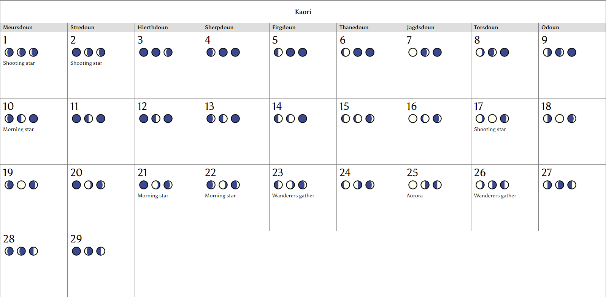
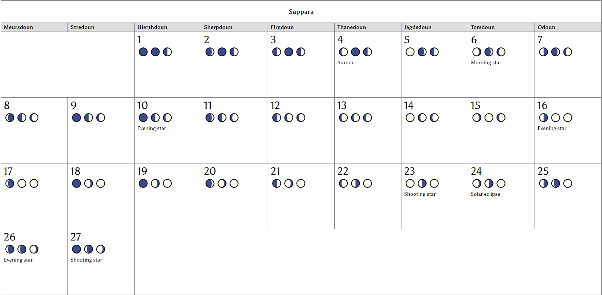
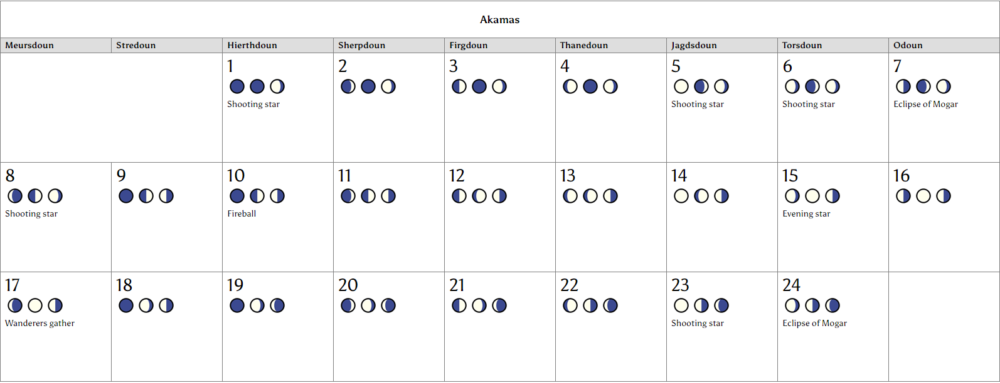
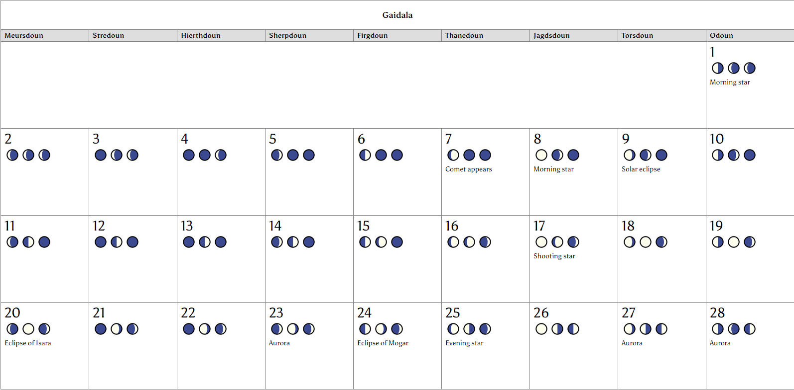
Summer
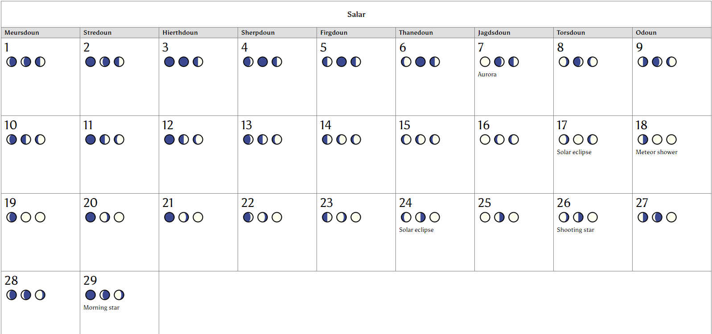
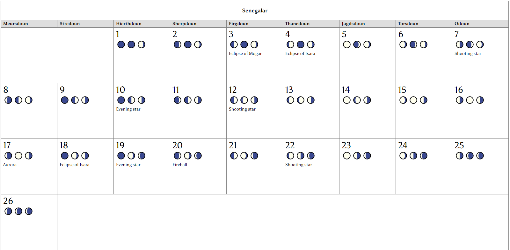
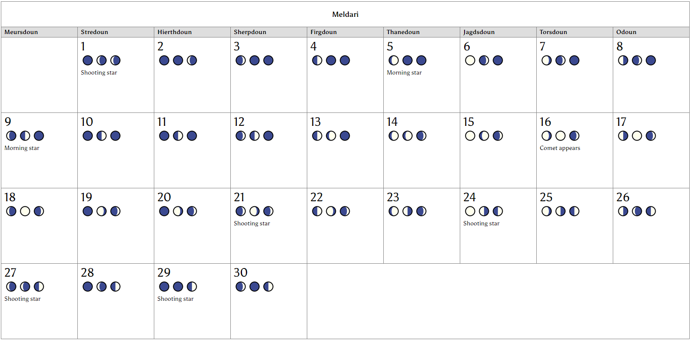
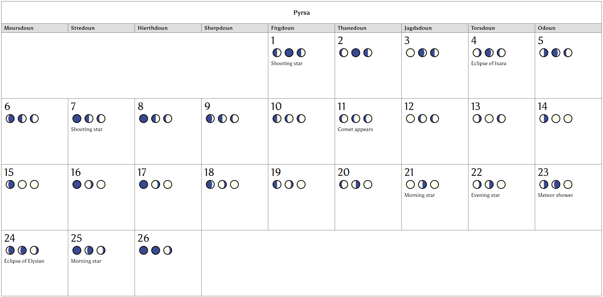
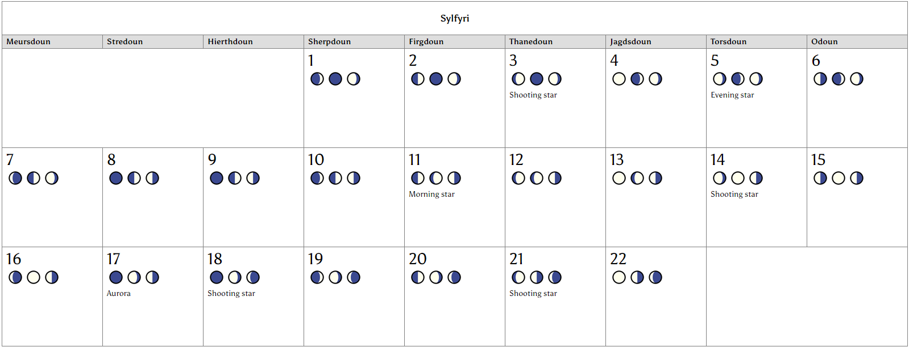
Fall
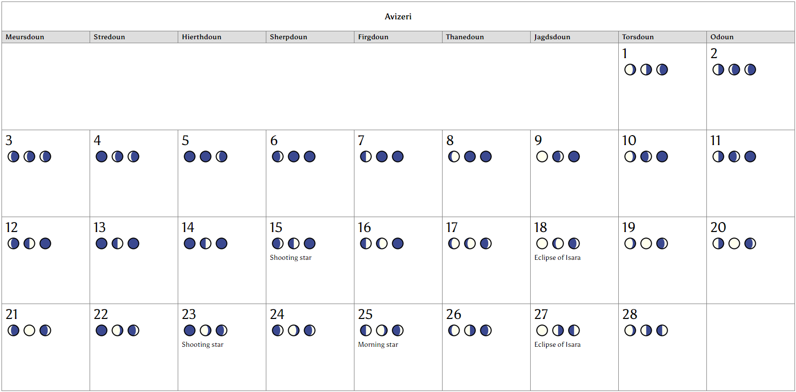
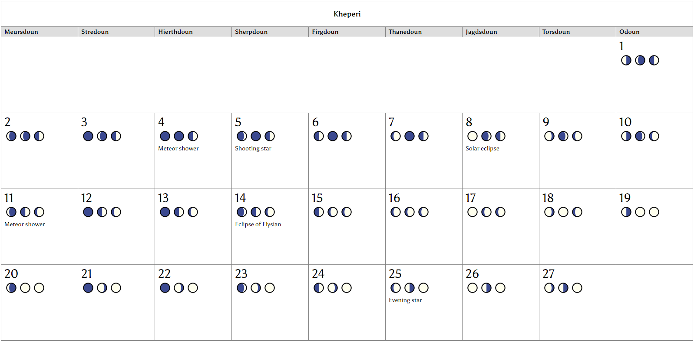
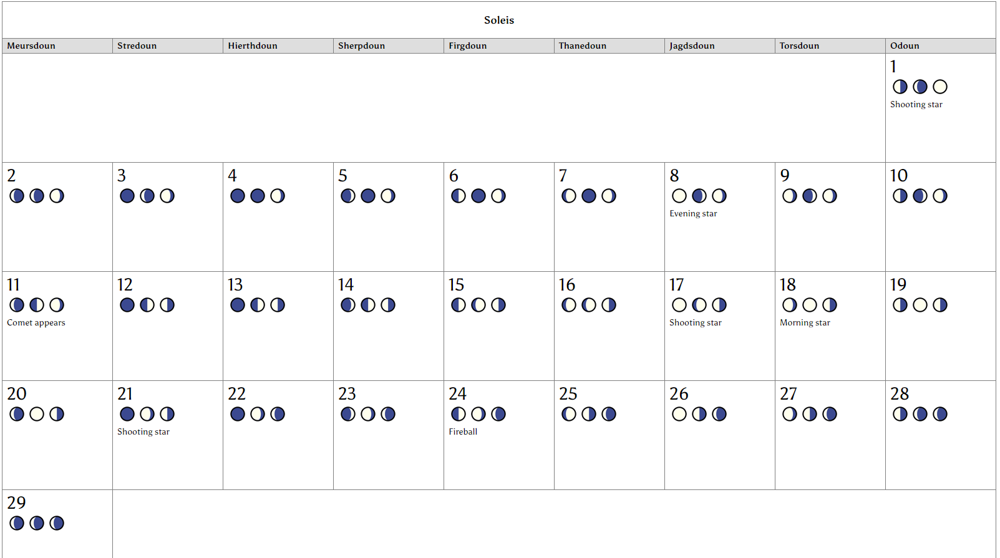
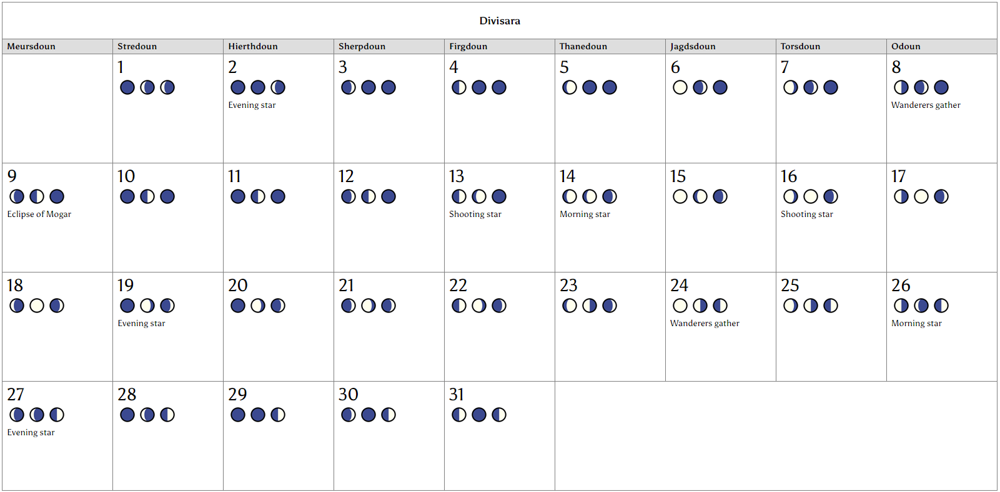
Winter
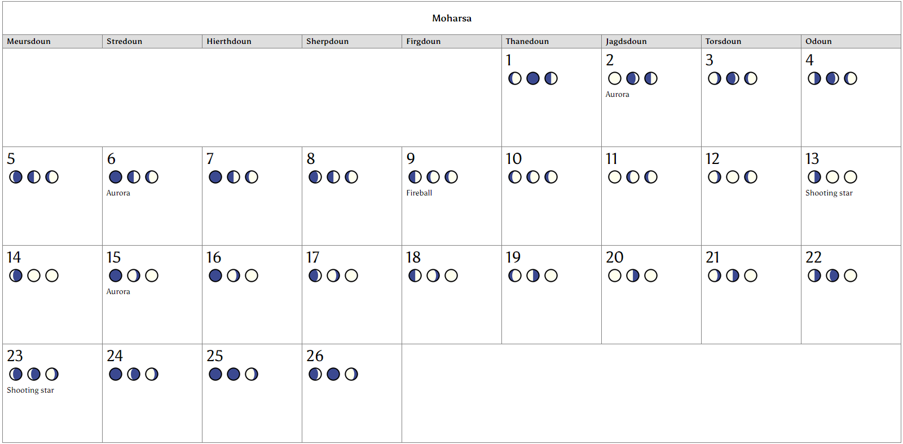
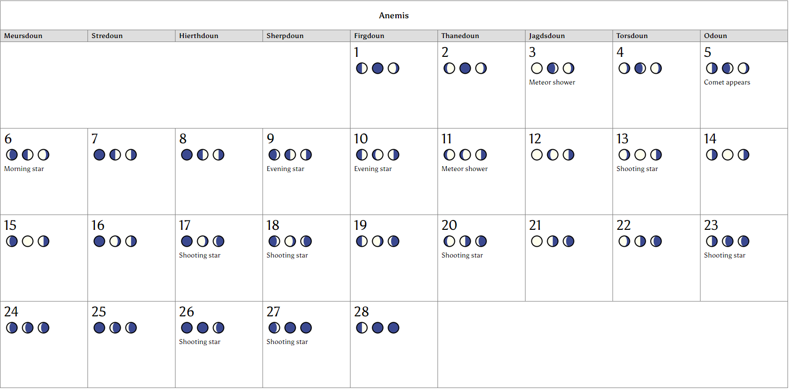
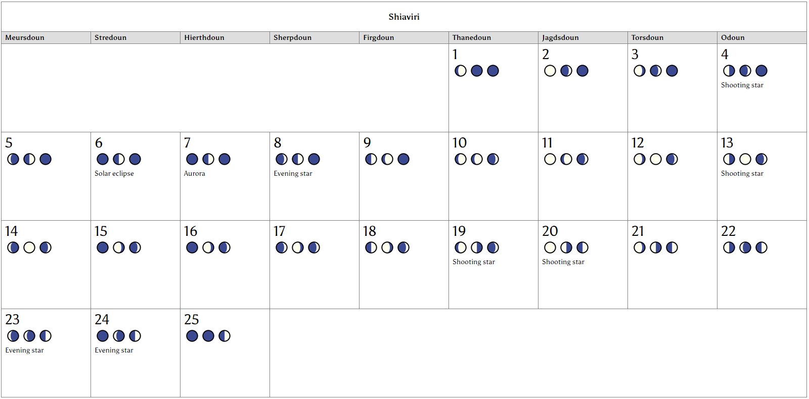
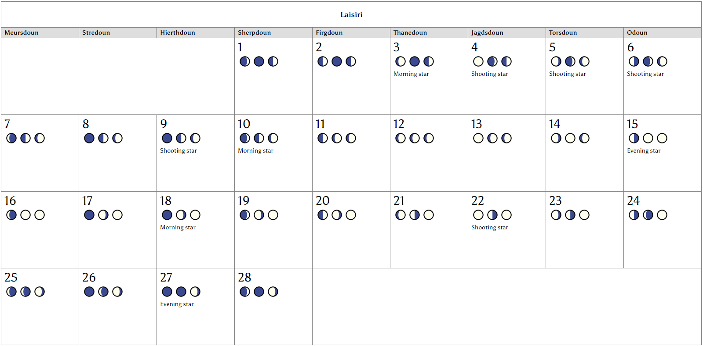
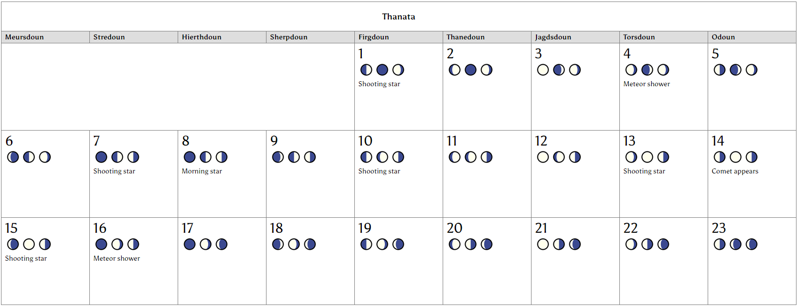
Gods of Icara
The ancient and mighty entities worshipped as the gods of Icara take many forms, but share some defined traits depending on their nature. Gods are often defined or categorized by theologians in the following groups:
Elder Gods
Elder gods have been around for all of recorded history, and are often part of the origin story of Icara itself. Elder gods typically are considered to inextricably tied to Icara itself - the best example these are the elemental gods or the patron gods of the Elder races. Elder gods do not grant an "afterlife" or have a home realm to gather their faithful into. The souls of the servants of the Elders often disappear and cannot be called again after the mortal's death.
Immortal Gods
Immortal gods are from the Outer or Eternal Realms. These gods exist separately from Icara, which is just another battleground for their ideals and worship. They seem to gather power and might from the active worship of their followers, and often grant power to their faithful in return. The followers of the Immortals within the Eternal Realms are typically granted an eternal home in the afterlife, for good or ill.
Ascended Gods
Ascended gods were powerful mortals that ascended into godhood, often definable historical figures, with a few notable exceptions from pre-recorded history. While it is unknown what catalyzes an Ascension, many times throughout history it has been accompanied by a major war, tragedy, or other history-shaping event. Ascended gods tend to exist within their own realm, created or conquered during their Ascension. They may also exist within a Fae dominion or within the Eternal planes. Typically, they have power within this dominion but are not often seen outside of it. The followers of Ascended gods may or may not have an afterlife.
Patrons - Minor Gods or Demigods
Patrons are powerful beings that aren't quite gods or goddesses in their own right, but have significant power and often grant boons to mortals in exchange for their worship or a favor. These can include powerful angels, devils, or demons, as well as high fae or old dragons.
Pantheons of the Gods
#TODO (FILL OUT THE PANTHEON SUMMARIES)
Gods or goddesses within a pantheon are understood to be closely tied to a certain people, and are often primarily worshipped by that people. A god identified as a "Patron God" of a people is believed to have either created that people or to be primarily concerned with their welfare. Other gods or goddesses of that pantheon tend to have definable relationships with the patron god, either as an acolyte or adversary - but all gods or goddesses included within a pantheon are shepherds for their people.
Dwarven Pantheon
The dwarven gods are a relatively unchanging, ancient lot. Dwarves worship their Patron God, Odin, an elder god of great power. They also are protected by mighty dwarven heroes who have Ascended.
Dynastan Pantheon
The Dynastan are protected by the great heroes of their race, and call upon them for guidance when needed. The Dynastan Pantheon is fairly unique in that all of their gods were mortals who Ascended.
Elemental Pantheon
The elemental forces are elder gods. They have been present since the beginning of recorded history, and are worshipped by many different cultures under many different names. Their true ethos and goals are a mystery, as is whether they actually need or desire the many worshippers that have flocked to them. The elemental forces respond to power more than they respond to piety, and are called upon in all walks of life. They do not involve themselves in the petty struggle for power and worshippers that other gods do, which some say shows they are true gods and others claim shows they are simply a force, not a true entity, and prayers in their names are meaningless.
The gods and goddesses of the elemental pantheon tend to draw worshippers of all cultures and peoples. Elementals grant boons, but if they speak directly to their faithful, that's between them. Often, those who worship the primal forces that form the foundation of Icara are left to divine their own magical purposes. Other worshippers accept the words of the fae most closely tied to the elemental dominion that they serve as the words of their masters.
Eternal Pantheon
The Eternal Pantheon includes the Pantheons of the Heavens and the Hells, which contain the gods, devils, and demons who wage war over the souls of mortal men and women in Icara.
Human Pantheon
The humans worship a wide range of gods and goddesses, from the Old Primal Gods to those that Ascended to stand at the side of the Eternals. There are
Moon Elf Pantheon
Orc Pantheon
Sun Elf Pantheon
Tribal Pantheon
Gods without a pantheon are worshipped by a wide variety of peoples that do not seem to show favor to any, or those claimed by multiple races. Alternately, they can be entities about which there is a either conflicting or misleading information, and scholars are unable to determine the true intentions of the god or goddess.
Dwarven Pantheon
The dwarven gods are a relatively unchanging, ancient lot. Dwarves worship their Patron God, Odin, an elder god of great power. They also are protected by mighty dwarven heroes who have Ascended.
Dwarven Lore is heavily tied into their creation myths and ancestral histories.
Gods
It is commonly accepted in dwarvish culture to worship:
If a dwarf joins a cult or outsider religion, it tends to be:
Odin - Patron God of the Dwarves
Titles
Patron God of the Dwarves, The Forge Keeper, The All Father
Ethos
Odin is the favored deity of the craftsman, being it a blacksmith or carpenter. Odin preaches a strict sense of family and of honorable service to one's king, religion, and family. The Forge Keeper expects his followers to be steadfast and determined above all things.
The religion of the dwarves thrives on not complaining, persevering through difficulty, and being honorable in all things. Faithfulness and fidelity are espoused by the priests of Odin, as are temperance of spirit and action. A dwarf is cautioned never to act too swiftly, either in joy or in anger, and to be as a rock for family, friends, and clan. A dwarf is always reminded that they must serve their king first, their father second, their spouse and family third, their friends fourth, and themselves last.
Worship
The priests of Odin are a huge part of the dwarven community. They host gatherings, provide charity as they see it necessary, and counsel dwarves in need. A priesthood calling is not a full time job for any but the most sacred and highest calling, and most priests also serve another function in the community as well, be it baker or soldier. Priests strive to lead by example as much as anything, and consider their actions the model for the community as large. Dwarven priests seek to inspire their fellow dwarf. They are famous for their hymns, deep throated songs sung in unison, which echo and reverberate through the very stone of the earth. They are also famous for their whiskey. Dwarvish Holy Water is stern stuff, thick-bodied and dark like the earth itself. Dwarves view it as the water of life, believing that the sacred brew they create was used at the dawn of time to awaken the stones themselves. Dwarven brewmasters are trained for years, and only after having been ordained by a high priest of Odin are they allowed to create the consecrated intoxicant that is considered the sacred brew of Odin. It is commonly drunk during ceremonies and during dwarvish religion services. Priests expect their parishioners to be somber and reflective during the services, whether drunk or sober, and rude or boisterous activity is to be saved for the drinking hall, not the chapel. In the drinking hall, however, it is considered proper form to live life to the fullest, and enjoy those blessings that Odin has given to the dwarvish people.
Dwarven priests consider coin gathered in their coffers money being handed to them for stewardship, and they seek to use it on the community first. The job-holding priests use their own money for upkeep of the temples of Odin, and to see to their own needs. Because they put the needs of the community over that of their clergy, the priests of Odin are highly respected by many, despite their intoxicating worship ceremonies, and Odin is a welcome presence in the majority of cities.
Symbology and Iconography
#TODO(Symbols)
Temples
#TODO(Temples)
History
Odin is an Elder god. Like Jarallan, he was granting strength to his faithful before history was being recorded. The dwarves claim that he created Icara, shaping it on his great Forge, then crafting the creatures out of clay and imbuing life in them with his life-giving elixir - potent, god-brewed liquor. He then set them about their work. These were the first dwarves. Dwarves then claim that Odin created other creatures to cover Icara. They don't often believe that Odin created the other people of Icara, believing all gods created their own peoples to inhabit the perfect world that Odin created, but a few do allow that "a tip too many of the flask would account for the elves, after all".
Odin is a fairly demanding god, expecting his people to ever strive for personal perfection and ever=greater heights of service to others. Many a snide dwarf has commented on the irony that the dwarf strictly sets out rules of behavior for himself, ever seeking to govern their own impulses, while the elf sets out rules of behaviors for others and caters to their own impulses whenever the fancy strikes. Odin's strict rules on tradition and fealty leave little wiggle room for change, and his doctrine has stayed consistent for centuries.
Source of Divinity
#TODO(Source)
Souls of Followers
#TODO(Souls)
Thor - God of Battle
Titles
God of Battle, God of Thunder
Ethos
#TODO(Moved Ethos to Worship, worship to Temples.)
Worship
Thor is the god associated with battle, tempest, lightning, thunder, chaos, and bravery. Prayers are offered to him generally in times of dire need, or in times when courage is needed. Thus, he is often prayed to by soldiers of the eve of a dangerous battle, or during a time of great hardship (such as when a mine collapses, or another natural disaster threatens). Dwarves tend to evoke Thor's name whenever there is any sort of elemental disaster, from fire and frost to lightning or flash floods.
Thor's worship includes deep drinking as a religious exercise. The taunts and jeers raised in a drinking hall usually invoke his name. Dwarves who would never take Odin's name in vain even on pain of death will swear at Thor until they're blue in the face without a second thought. There is little held sacred about Thor, but dwarves have much respect for the lightning thrower.
Symbology and Iconography
#TODO(Symbols)
Temples
Thor rarely has his own temples. He will often have an altar in Odin's temple, or small shrines at fortresses, castles, or other military outposts. Many priests of Odin respect and encourage worship of Thor, though more paladins and fighters worship Thor than priests do.
History
Thor first made his presence known in the Age of Blood, during the Titan Wars. He made a great name for himself as a dwarvish champion. He wasn't so much a brilliant tactician as an unstoppable warrior, who smashed the giants and ogres as if they were kindling, wading through lines of enemies with devastating efficiency. Thor was a tireless combatant who cheerfully slew enemies from sunrise to sunset, according to the dwarven legends. If he was angered, he became even more ferocious, smashing his foes with great claps of thunder and splitting them with lightning strikes. Thor was at the forefront of the offensive that eventually killed the titan who was leading the armies against dwarven kind. His ascension took place in the titan's enormous palace, as Thor used his hammer to smash the giant's tremendous greatsword, and then blasted the titan's skull with the very next swing. Witnesses say that Thor simply rose up afterwards, crackling with power, until a tremendous lightning bold split the earth where he floated. When the smoke cleared, Thor was gone, never to be seen in the worldly realm again.
Many dwarves do not believe that Thor was ever truly mortal. They believe that he is the son of Odin, come to Icara against his father's wishes to help contain the threat to his father's people, and that he returned to his father after the threat was destroyed. There has never been any official dispute to this by the high priests of Odin, but many scholars state that even if a dwarf had ascended, the stubborn and traditional-minded dwarves would work to tie the new god into their existing religion anyway.
Source of Divinity
Ascended God residing in the Sacred Undermountain
Souls of Followers
Dynastan Pantheon
The collection of Dynastan Gods
Draken - Patron God of Dynastan
Titles
Patron God of the Dynastan, God of Strength, Chain Breaker, God of Freedom
Ethos
Despite his appearance, which in itself would strike many unaware adventurers as a statue or idol to a demon, Draken is a good god. He espouses protection of the weak by the strong, unity in all things, and strength in the face of adversity. Draken also preaches order and civilization, and tasks his followers in preserving both.
Worship
Draken has little in the way of formal worship. He is spoken of with respect, and his insignia or likeness graces many informal family chapels and shrines within the Dynastan Empire. While many Dynastan pray to Draken, without a formal church there is little in the way of organized direction for his worshippers.
Draken extends himself as a presence, if at all, and there is no recorded history of him appearing as an avatar. Since the Dynastan themselves seem to view Draken much as a revered prophet, scholars tend to do the same. However, his godhood appears to be a given for the Dynastan people, who think of him as a messiah.
Symbology and Iconography
#TODO(Symbol)
Temples
#TODO(Shrines?)
History
Draken is an Ascended god. His historical presence is strong even in what little was recorded by the Dynastan people during their early history. He brought all Dynastan together beneath him, and along with Tyranus established the structure of society that still exists to this day. He guided his people through many severe threats to the Dynastan, from rival civilizations to near apocalyptic events, such as the mighty dracolich that threatened the young race with extinction. His deeds were the stuff of legends, and though he didn't live a long life, even as long as a normal Dynastan, what he accomplished cemented the future of the Dynastan as a power in the south. He supposedly met his death at the hands of the enemies of his people, but not even death his dedication. He continues to grant strength and guidance even from his grave.
Source of Divinity
#TODO(Source)
Souls of Followers
#TODO(Souls)
Sylith - God of Conquest
Titles
God of Conquest, God of War, The Bladed Wyrm, The Scaled Emperor
Ethos
A Dynastan god of great influence, Sylith exhorts his followers to conquer and subjugate the world of Icara. It was under the influence of the mortal Sylith that the Dynastan armies that had long served only as a shield for the short-lived empire were forged into a far-reaching and hungry sword.
Sylith's followers worship him as a god of war. Like Draken, the worship of Sylith is less formalized that most religion, though Sylith does have large towers dedicated to his worship in the form of mastery and control. His true believers are fanatical swordmasters that live to battle, ever pushing themselves to greater and greater heights until they inevitably fall in batter. His worshippers believe that, even in the afterlife, Sylith is gathering an army and that your skill and prowess when you die will determine your place in that heavenly host of warriors. The prophets of his church foretell a second coming of Sylith, when he will lead this reborn army across Icara, destroying all who oppose him. Other religions are, justifiably, none too thrilled by the apocalypse scenario threatening their faiths, and Sylith is not often worshipped in conjunction with non-Dynastan gods.
Worship
Sylith's teaching go beyond war itself, also preaching the justification and purpose behind the war. His worshippers preach that strength of arms is the only truth of the world, and that moral or idealistic differences are best settled on the field of battle, where the "correct" ideals are those of the victor. A war fought in Sylith's name is a war of subjugation and plunder, a war to enrich the victors and exterminate the "evil" ideals of the defeated. The Bladed Wyrm doesn't believe in relinquishing the upper hand once a battle is won, and tribute is demanded of those deemed unworthy on the field of combat, a tribute of blood or coin.
For this reason, beyond the fanatic faithful, Sylith is also worshipped by bandits and highwaymen, who justify their own pillage and plunder with Sylith's "Might is Right" philosophy, further tarnishing the civilized world's view even from beyond the Dynastan jungle.
Symbology and Iconography
#TODO(Symbol)
Temples
#TODO(Temples/Shrines)
History
Sylith was a central figure of the Fifth Age. The direct descendant of the mighty Draken, Sylith rallied the Dynastan people into a bloodthirsty frenzy. Enslaving dozens of jungle-dwelling races, they marched forth upon the civilized lands of man. The southern kingdoms were dismissive of the Dynastans as just another horde of monsters, such as the orc or ogres armies that had long been held at bay by the advanced weaponry and tactics of humans, dwarves, and elves. The conquered that managed to survive as slaves quickly learned to appreciate the difference between a Dynastan army and monstrous horde. Sylith was merciless in his tactics, and treated humans and dwarves with no more deference than they had given orcs or goblins. Over the thirty year campaign that Sylith led, millions died at the hands of the Dynastan war machine, and many of the southern lands were returned to nature as they were purged of a population. Those that remained served as staging points for the ever-expanding invasion of the north.
By the time Sylith led his into the northern kingdoms that ringed the southern reaches of the Tarajahan desert, the poor souls within those lands had stockpiled supplies, fortified their defenses, and prepared for a siege as their please of aid from neighboring kingdoms, both great and small, had apparently been ignored. However, an unexpected answer to their pleas came as the Dynastan stood upon their doorstep in the form of a storm the like of which had never been seen, and has never been seen since. Sleet, blizzard, and deathly cold descended upon the land for weeks. The blistering, unnatural cold froze many in their bed, killing animals even in hibernation. The decimation of the unprepared Dynastan army was near absolute, with only Sylith and a few of his more stalwart companions surviving. Though the Emperor may have been able to retreat and regroup, or even raise another army, Sylith became unhinged at the deaths of his beloved armies, and charged the battlements of the besiege kingdom alone. In his suicidal wrath, he struck down many humans, dying with hands drenched in blood. The few Dynastan that survived say that, upon his death, a column of flame shot down from the heavens, immolating him and a huge section of the kingdom's castle.
The Ascension of Sylith did little to give him temperance, wisdom, or patience. The Dynastan were drive to war still, by divine prophecy of the fallen Emperor, but the succession of Sylith was brutal, his throne sought by too many as noble houses that claimed the blood of Draken blessed their lineage. By the time the Dynastan army returned to those kingdoms against which their tide had broken, they found themselves facing an army of legions, calls for aid no longer going unanswered. Even with the blessings of their newly ascended God of War, the Dynastans were defeated and slowly driven back through decades of their invasion, deep into the southern jungles until they had to consider a truce or fear for the very foundation of their empire. And so a century removed from fhe Dynastan's emergence into the kingdoms of men, the last vestige of the Scaled Emperor's vision was put to rest with the stroke of a quill.
Source of Divinity
#TODO(Source)
Souls of Followers
Conscripted into Sylith's army in #TODO(Location)
Tyranus - Good of Purification
Titles
God of Purification, God of Purity, God of Burning Light, Hand of the Emperor
Ethos
Tyranus is a Dynastan god whose primary tenants seem to be the extermination of the undead. The God of Purity focuses much attention on the suppression of the dark art of necromancy, and the destruction of the creatures created by it. The disciples of Tyranus are tireless in their pursuit of the undead, and crusades to destroy them can be called by any priest of Tyranus.
Worship
Tyranus has, by far, the most formalized of the Dynastan religion, with temples of worship, written doctrine, and active preaching and conversion taking place within his faith. Tyranus seeks to convert many potent warriors and mages to his ranks for the fight against the living dead, but also converts non-believers simply to provide structure and moral framework to the benefit of society. Of all the fathers of the Dynastan Empire, Tyranus more than most saw the benefit of of a society living not just by laws, but by moral codes as well. As such, what marriage, funeral, and birth rites exist in Dynastan society were created by the religion of Tyranus. Family histories and lineage, now such an integral part of Dynastan culture, are kept because of Tyranus, and are still officially recorded only by priests of the god, though most noble families of any size include a few members of the priesthood who keep the family records.
Tyranus is the one Dynastan god who attracts worshippers of non-Dynastan frequently, as well. No priest is quite so prepared to deal with undeath as those who wield the holy weapons of Tyranus. For this reason, a number of non-Dynastan shrines have sprung up, though the non-Dynastan shrines tend to be focused on only the destruction of the undead, and are more cultish in nature, lacking the scribes and priesthood that Dynastan temples have built up to deal with all the other spiritual needs of the Dynastan people.
Symbology and Iconography
#TODO(Symbols)
Temples
#TODO(Temples/Shrines)
History
Tyranus was a peer of Draken. The highest clergy of his priesthood and few others know the true and terrible history of the Dynastan people, a history that is considered shameful and therefore never taught to the common people, but handed down from high priest to high priest. That truth is that the Dynastan themselves were created by foul necromancy at the hands of a dracolich of unfathomable strength and power. This creature wished to subjugate the world, and through blood sacrifice manipulated the life-force of enslaved dragons, ushering into being a new race of warriors. These warriors he bred and trained to fight for him, and each from birth was bound with blood to serve him. Draken and Tyranus themselves were the greatest achievements of this loathsome army, two beings so steeped in the ancient arcane power and unbridled ferocity of the great wyrms that they were near invincible. At hte head of an army of death that swept life clean everywhere it marched just as the Age of Apocalypse was coming to a close, they harvested souls for the unquenchable thirst of their skeletal god as he traveled with them in gathering the blood sacrifices it desired for its attempt to become a true god.
It was during just such an extermination, the genocide of a great sun elven city, that the Sun magic of the elves allowed Draken to gather his own identity from deep within its necromantic hold, as they tried to burn and dispel the unstoppable reaper that Draken was. That blazing shock of divine pain-inspired freedom allowed Draken to betray his master, and using his knowledge of his dark master's secrets, to destroy the creature utterly.
With the dark necromancer gone, the bonds of the Dynastan people were shattered. Tyranus and Draken, the leaders for so long, set out to create a new life for themselves and their people, with the aid of the Sun Elves, in whom they found ready allies in their attempt to create some good from the evil that had been wrought by their hands. The bitter secret of their creation died with that generation of Dynastan, carried with them to their grave, but the hatred of foul necromancy and the creatures wrought of it was passed on to each new hatchling. Draken and Tyranus organized their society so that it would ever be strong, but would always carry with it that burning brand of hatred, lest another find a way to subvert them once more. So it was that Draken was made Emperor of the newly crafted empire, and Tyranus was made its high priest, creating a religion which was never intended to have a god. Tyranus lived long after Draken had already ascended, but in the twilight of life, the empire stable and complete, he disappeared. Common Dynastan think he ascended then to grant power to his created church, but the high clergy know that he had set out to consecrate the birthing grounds of the Dynastan where he had been created so many years before. Tyranus himself hated gods, since the only thing he had ever known to claim godhood was the black and wicked undead wyrm that had crafted him as a weapon. No one knows what took place at that ancient birthing ground, or even where that unholy site was. What the priests do know is that the man they had worshipped even as a mortal appeared to give them divine strength in their holy war. Speaking praises to the mortal and whispering prayers to the god was an easy transition.
What scholars know is very different, simply that Tyranus was Draken's right hand in forging the Empire. They know he created the church that eventually became his religion as a tool of education and stability to the empire, and that there is a strict hierarchy in place in all aspects of the Empire.
Source of Divinity
#TODO(Source)
Souls of Followers
#TODO(Souls)
Elvish Pantheons
The Elvish Pantheons are split into two major groupings, depending on the type of elf.
- Moon Elf - The high, wood, and shadow elves tend to worship one or more of these gods:
- Jarrallan - Patron God of Elves
- Tyra - Goddess of Nature
- Ale'vandra - Goddess of Magic
- Lilith - Goddess of Shadows
- Illyriel - Goddess of Music
- Sun Elf - The sun elves tend to worship one or more of these gods:
- Ra - God of the Sun
- Isis - Goddess of the Moon
Jarallan - Patron God of the Elves
Titles
Patron God of the Elves
Ethos
One of the Elder God’s, Jarallans influence is felt often in lands where elves live. Jarallan very rarely directly influences his people or worshippers, but the spells of his priesthood are strong and those blessed with his presence will attest to the strength of the deity. High Elves believe it is from Jarallan that all other things have spread, and that he is the father to the rest of their gods, their race, the elements themselves, and the very land of Icara. Jarallan is often called the Guiding Hand or guiding light, and his worshippers often do not directly utter his name, feeling it blasphemous. As such, many others do not speak or do not even know the name of Jarallan, since his worshippers do not seek converts. Knowledge of the elf lord is considered precious, and most edicts and prophecies are closely guarded secrets.
#TODO (Presence or Avatar)
Worship
The beliefs that are known are very straightforward. The elvish principles of stewardship of the land, of magic, and of even other peoples are the strongest in those that believe most faithfully in Jarallan. Elves who follow him consider it their duty to educate, protect, and better the world. It is in this spirit that the forests are tended and grow lusher, that the animals live in great numbers, and there are few more prosperous places than the homelands of the elves. Some elves take this to mean the education of the world, and roam the lands as tutors or advisors. Some take this to mean the destruction of harmful things, and act as protectors from a particular bane, such as dark magic, or undead, or demonic meddling. However, many outsiders resent the complete control the faithful claim to have a divine right to, and those who do not comply with the divine wisdom of the priests of Jarallan are subject to it precise and uncompromising justice.
While their ideals are pure and good, in practice, the results can appear almost devilish. When a human farmers wheat farm is burned to the ground because it is upsetting the local ecosystem, or when an orc tribe is “thinned” to control the numbers, it is hard to think of Jarallan with love. Truly, the god’s edicts can be dangerous as well as beneficial. It was following a twisted version of Jarallan’s doctrine that caused the dark elves to decide humans and orcs should be cast off the mortal coil.
The vast majority of the god’s worshippers are elves, with a smattering of other races thrown in. Of the elves, high elves are most prominent, with Sun and Wood elves, then Shadow and Gray Elves worshipping him in respectively smaller and smaller numbers. The priesthood of Jarallan will allow the worship of non-elves, but they do not hold any places of import within the religion.
Symbology and Iconography
#TODO (Symbol)
Temples
#TODO (Temples)
History
Jarallan and Odin are the first of all recorded gods. Jarallans worshippers claim that not only did Jarallan create the elves, but also the world Icara itself, as well as all the other races, elements, natural creatures and even gods that live on the planet. Jarallan’s worship has been at the heart of many wars, and he is often called upon when war comes to the elves, but he is considered a good god by most elf and non-elf alike. Though imperious, his priests are helpful so long as they believe that they are not hindering the will of their all wise deity by doing so. Any foes of Jarallan, however, are dealt with swiftly and without mercy
Source of Divinity
#TODO (DO IT)
Souls of Followers
#TODO
Tyra - Goddess of Nature
Titles
Goddess of Nature. Gaia, Primal Mother
Ethos
Tyra is the elvish Goddess of Nature. Her worshippers say that she controls the seasons, the sun, the moon, and that she breathed life into all that walks the earth. She is often depicted as a fair skinned elven woman with hair that grows to her ankles, adorned with flowers and plants, or as a carefree elvish child, and is prayed to by many who depend on the whims of the natural world to survive.
Tyra’s faithful depict her as a gentle and loving mother, one who wishes no avoidable death on anyone. Despite the harshness of the natural world, the nature spirit supposedly harbors no ill will toward anyone. Tyra’s priests believe in achieving true happiness by following ones natural essence.
This includes plant and animal, prey and predator, rock or ocean breeze. The worship of Tyra means a belief in the animus of almost every thing in the natural world. The goal of the priesthood is to maintain that natural order by suppressing overly destructive creatures and forces, aiding the growth and well being of the natural world.
#TODO (Presence or Avatar)
Worship
The priests of Tyra are often guardians of the forest, protectors of nature, enemies of disease, blight, famine, and any other force that would destroy the natural world. While she is an elvish goddess, many non-elves have taken her teachings to heart as well. You can find worshippers of Tyra among the elves, humans, rakasha, dwarves, and even the dynastan and the orcs. She is also widely worshipped by dryads, nymphs and treants, centaurs, wisps, and many other intelligent but non-humanoid creatures. The elf faction that have come to be known as wood elves are her most faithful worshippers, and are known as Tyra’s elves (or Tyras elves) as well as by their more traditional name.
Symbology and Iconography
#TODO (Symbol)
Temples
#TODO (Temples)
History
There is debate as to whether Tyra should be called an Elder, Created, or Ascended God. She has been present since the beginning of recorded history, but her ascendance is part of the elvish creation myth. Tyra was the first of the elvish race, the first creature Jarallan breathed life into in all the world. From here she took on many of the creation duties herself, and is supposedly the mother of the elements and the race of elves. The Sacred Tree that once grew in the heart of the elvish lands was the manifestation of her will, and the first thing she planted, which she used as food and shelter for all the young things of the world. Despite being, according to legend, older than the elements themselves, Tyra is often worshipped as a child, and equally spoken of as one who can protect and one who needs protecting. She is beloved goddess by the elvish people, and widely worshipped by non-urban peoples, but has few if any strongholds of worship in major cities. She is generally acknowledged, and she is considered a good goddess, though she is more accurately described as neutral.
Source of Divinity
#TODO (DO IT)
Souls of Followers
#TODO
Variant Worship – Gaia
As seen in Elemental worship, as part of the Sacred Sisters interpretation of elemental gods. In this interpretation, instead of being the creator of and above all of the elemental gods, she is simply a part of the elemental gods. See Gaia.
Lilith - Goddess of Shadows
Titles
Goddess of Shadows. Queen of Murder, Shadow Queen, Queen of Blood, Devouring Night, Sylph of Death.
Ethos
Lilith, the cunning and powerful goddess of the dark elves, is rare worshipped by those without elven blood coursing through their veins. The reason for this is fairly simple, for the Queen of Murder’s stated goal is no less than the death of every non-elven humanoid on the planet. Her beloved people, the vicious and merciless dark elves, travel in the lightless tunnels and caves under the surface of Icara known as the Shadowdeep, threatening to spring up anywhere at any time to transform a civilization into a holocaust.
The Shadow Queen herself preaches strength, cunning and utter lack of mercy while dealing with foes. The lesson itself applies to all that would stand in the way of their goal, and the teachings have made the dark elves their own worst enemies, as they wage an endless war seeking supreme power and perfect techniques of war and death. As they step over the fallen bodies of their kin to demonstrate their own worthiness, they see only the smile of their dark queen, urging them on to destroy the creatures of the world above.
#TODO (Presence or Avatar)
Worship
Followers of the Lilith seek to demonstrate this worthiness with prowess in battle and cunning strategy. They prove this to themselves and their goddess by waging endless war against whomever stands against them, or even those that just happen to be nearby. The faithful of Lilith are among the most deadly soldiers, sorcerers and priests that live. Unfortunately for them (and fortunately for the world) they find themselves pitted against each other just as often as they are against outsiders. Backstabbing power plays are common among the followers of Lilith.
On the surface, many elvish cultist who secretly believe that the elven race is doomed unless the other races are brought to heel work to accomplish that end. This is especially prevalent in high elf society, where elven elite and commoners alike may work behind the scenes to throw kingdoms in disarray through assassination and intrigue to weaken them and advance the agenda of Lilith.
Symbology and Iconography
#TODO (Symbol)
Temples
#TODO (Temples)
History
Lilith has been given many titles by the terror filled populations she has hunted. Before she was called any of them, however, she was called savior.
As a soldier in the wars the elves waged during the Age of Blood, Lilith turned the tide of their wars from continual defeat at the hands of the well equipped, well disciplined dwarves in the elves favor. She quickly escalated through the command structure of the elven armies, culminating with her being put in charge of the entire elvish military. Lilith copied dwarven military hierarchy to instill discipline and unity of purpose into her soldiers, then moved beyond anything the world had seen in military coordination of magic and strategy. The unstoppable menaces that had threatened the elven people crumbled against an ever growing and fanatically loyal elvish war machine. The dwarves were sealed into their holes. Growing threats from humans and orcs were silenced with singled minded precision. The elvish people were safe. Lilith, however, was far from satisfied. As long as these mongrel races existed, the elvish race was in danger. She vowed to destroy these threats, and imbued herself and her loyal with the very essence of night and shadow, binding arcane power into the very fiber of their beings. They called themselves shadow elves, to represent the mark of shadow they had taken upon themselves. Many elves, however, protested, saying that such whole scale destruction was counter to every teaching of their gods, and could not be permitted.
Lilith would not be persuaded by such cowardly arguments, and set about smiting the enemies of the elves in earnest, massacring not just armies, but settlements, kingdoms, destroying them to the last babe. Her exploits became crueler and crueler, taking more and more delight in grinding non elves under her heel. Elven leaders and pacifists demanded that she cease, she disregarded them. At last members of the Aeiris Synedra confronted her personally and demanded her retirement and pursuit of non military interests. She laughed in their face, and despite their power, struck them all down. Enraged by this treasonous, incomprehensible act of evil, the elvish race rose to destroy her, only to be bested again and again by the general and those still loyal to her. Making light of their attempts, she set out on an campaign through the Underearth to destroy one of the ancient and great lineages of dwarves, burning them to death in their underground homes, and driving the remnants of their race onto the surface of the frozen north to die. When she attempted her return home, she discovered a massive elven host prepared for her. Elvish legend says that the avatar of Ale’vandra herself stood beside the armies of high elves, and truly, since the most experienced and battle hardened soldiers were on the side of Lilith, it may be true that divine assistance was given to the high elves that day.
The earth was thick coated in elven blood before the power mad general was cornered by the powerful mage priests of Ale’vandra. Seemingly doomed, Lilith called forth a dangerous spell that ripped open a shadowy vortex, consuming the general and her attackers. Without her, the shadow elves were scattered into the dark corners of Icara. Their cause seemed lost….until the voice of Lilith once again began to whisper to them from the darkness. Granting them divine strength, Lilith once again brought her faithful from the brink of death to build the strength necessary to destroy the enemies of a perfect world….enemies that now included elvish goddesses’ as well as the mongrel races.
Lilith is considered an evil Goddess. Few societies recognize or allow her worship, and she is not allied with other gods or goddesses. Though her priests will occasionally also worship or pay respect to Jarallan, Tyra, Magus, or elemental gods and goddesses, they worship and recognize no other gods except as part of a stratagem or to fulfill a short term goal. Despite this, worshippers of Lilith do not count most elves as her enemies…though Ale’vandra and her followers hold a special place of contempt in their hearts.
Source of Divinity
Ascended Goddess dwelling in the Fae Realms
Souls of Followers
Dissipated back into the Primal Weave
Ale’vandra - Goddess of Magic
Titles
Goddess of Magic. Goddess of the Arcane, Lady of Secrets.
Ethos
Ale’vandra is the Goddess of all magic. A mercurial force of immense power, Ale’vandra suffers even more confusion than Tyra in her description by her faithful. She has been alternately called the wife of Jarallan, or the sister of Tyra, or child of them both. Others state that she is not a singular entity, but the mystical connection of all living things. Others state that she is the embodiment of order in the universe.
Like Tyra before her, Ale’vandra has captured many more worshippers than elves alone. Ale’vandra’s name is whispered in hushed tones by a legion of faithful, from good servants seeking the responsible use of the arcane gifts to power mad devils seeking to wrench the flaming glory from her hands and hold it over their subjects like a black hooded executioner.
#TODO (Presence or Avatar)
Worship
From her actual priesthood, Ale’vandra demands responsibility and structure. She demands self-sacrifice, and supreme dedication. Above all, she demands secrecy. Ale’vandra does not give up her secrets willingly. She does not allow her priests to freely share them. Teaching is allowed, but not encouraged, and constant tests gauge the worthiness of each new student. The faithful of Ale’vandra are men and women of few words, quick wits, and iron patience, patience born of a lifetime of waiting for the sweet drop of knowledge to fall from the leaf while restraining yourself from grabbing the branch and shaking the drop free.
Ale’vandra’s temples are always well maintained, beautiful things, for so many seek to trade treasure for the power in the hands of the faithful. Judging by the temples, Ale’vandra herself must be fond of gems, jewels, gold and silver. There are temples to Ale’vandra in almost every major city, whether they are public places where people can go beg service or great towers of Arcane worship open only to the faithful themselves. Ale’vandra is considered a neutral god, and her worship is forbidden in quite a few places that fear the power that the Lady of Secrets might unveil.
Symbology and Iconography
#TODO (Symbol)
Temples
#TODO (Temples)
History
While the origins of Ale’vandra are unclear, a traditional elvish legend claims that Ale’vandra was an elf of extraordinary beauty during the first age, that captured the heart of the creator himself. When the elf maiden coupled with the divine spirit of the Highest, it set her ablaze with power. She did not show the same restraint with this divine might that Jarallan did, however, spreading the forbidden secrets of the arcane to all corners of Icara, drawing the elves away from the simplicity of their destined perfect existence with whispers of unending power. Power that was only meant for the highest was spread to all the elves, and from there it spread to the humans, the dwarves, and the orcs, beckoning unspeakable things into the world and corrupting many. It is said that many centuries later, a contrite Ale’vandra did her best to re-conceal and retake that which she had foolishly flaunted in her youth, but by that time it was spread through the whole world, and all of Icara was nearly ripped apart as she sought to contain that which had been given freely.
This likely speaks of her legendary battle with the mightiest of the mage kings, Magus, the man who would stand in defiance of the gods themselves, or of her destruction of Lilith, but may also refer to various times in the history of world where agents of Ale’vandra or the avatar of Ale’vandra herself appeared to staunch the unfettered use of magic.
Source of Divinity
#TODO (DO IT)
Souls of Followers
#TODO
Illyriel - Goddess of Music
Titles
Goddess of Peace, Goddess of Song, The Muse
Ethos
Illyriel is an elven Goddess who seeks the reintegration of the elvish race, seeking to merge all the various schisms that formed during the second age. She also seeks reconciliation of various other races, and is generally called upon or prayed to by those seeking peace for two countries as war, or mercy for the unfortunate. Illyriel is also prayed to by musicians, singers, and other performers, and is seen as a patron and guardian of beautiful music and song.
#TODO (Presence or Avatar)
Worship
Priests and Priestesses of Illyriel tend to either be peacemakers, negotiators, or neutral sites of rest and recovery for both sides of a conflict. Occasionally, they will take a stiffer role, and they are not above acting as an enforcer or armed guard if it assists the greater good. Alternately, worshippers are bards or traveling singers, spreading the general word of harmony and bringing hope to besieged and war-torn areas.
The beliefs of Illyriels’ faithful are fairly simple. They believe that war is a meaningless and brutal exercise in futility that only spawns more war and conflict. They seek to bring peace, beauty and simplicity into peoples lives wherever they can.
Symbology and Iconography
#TODO (Symbol)
Temples
#TODO (Temples)
History
Illyriel is a historical figure of the Third Age. There is some debate as to whether she was a high elf who occasionally magically wore the guise of a dark elf or vice versa, but she was a well known travelling songstress, whose songs could supposedly soften the hardest of hearts, to move the most malignant of souls. Using her powerful voice as a uniting force, she sought to resolve many long standing disagreements, doing what she could to bring together warring peoples and bring relief to a region sorely needing the voice of reason after the Age of Blood. She often travelled with Venus, and is tied to the Goddess in worship by some. She is famous for attempting to bring the elvish peoples back together at that time, seeking to heal the rifts that were caused in the bloody civil war that split them to begin with. Whether she could be called successful is a matter of opinion, for though the elvish races rarely come to war against each other any more, the deep feelings of betrayal that exist on both sides have not been forgotten or forgiven.
Source of Divinity
#TODO (DO IT)
Souls of Followers
#TODO
Ra - God of the Sun
Titles
God of Knowledge, God of the Sun, Seer upon the Mountain
Ethos
The God Ra is the god of the Sun, Eternity, or Knowledge. He is often depicted as a tall, golden skinned humanoid, with no nose, mouth or ears, and blazing golden eyes. Ra can also be displayed as any of the races of the creatures worshipping him. Ra is associated with the eagles, falcons and hawks, and has also been known to appear as a blinding light with a booming voice.
Ra’s makes no overt demands of his followers. It is the challenge of his followers to determine the correct way to act to accomplish their ascension into the heavens. Upon death, all beings are said to either ascend into the celestial heavens or descend into the damned caverns of the earth (known as the Underworld,) based upon what they have proven of their own worthiness. Each level of the celestial sphere is reserved for those who have earned it, and the amount of knowledge and wisdom needed to pass each level increases as the mortal ascends. The faithful of Ra are therefore forever weighing themselves against these unknown barriers, trying to increase their own worthiness in the holy Sun’s eyes.
Most worshippers consider Ra the only true god, though the goddess Isis is sometimes considered acceptable as well, even if she is not seen as Ra’s equal. Isis is considered to be either a messenger, lover or concubine, and like all other “gods” she is considered to be a mortal that have ascended into the celestial sphere or descended into the lower spheres of Icara and the Underworld. Dragons, demon lords, elemental forces and angelic consorts are all considered to be the denizens of the celestial or underworld escaped onto Icara.
As the exact means of this ascension is not spelled out in doctrine, the practice of ascension varies greatly between different cultures. Some cultures believe the Sun god smiles upon strength, physical perfection and bravery in the face of conflict, in these cultures, worship of the Sun god is much like worshiping a god of battle. Other cultures consider Ra to most respect knowledge and wisdom. In these cultures scholars are venerated as priests. Other’s believe that to ascend, one much transcend that which is earthly, must overcome mortal appetites and become more like the eternal one himself. These varying religious ideologies may all be in place in the same culture, such as the Sun elf culture, where both the wise and the strong are considered close to god through their actions.
#TODO (Presence or Avatar)
Worship
Priests of Ra most often attempt to divine information through the interpretation of the heavens, either through sundials or other intricate observations of sunbeams, or through the interpretation of the stars and meteors. Temples to Ra often involve gold and fire, both considered sacred by the worshippers of the Sun god. It is not uncommon for a priest or warrior of Ra to wear a golden disk upon the forehead or displayed prominently on the chest. These are considered holy symbols to the god. Also, jewelry that holds a fire ruby is also considered blessed and holy by many sects of the god. The worshippers often wear cotton robes and clothing.
While primarily worshipped by above surface humanoid races such as humans, elves and rakasha, he has also found favor amidst the Dynastan because of the close ties between the Sun elves and the Dynastans. Ra is also much more prominently worshipped in tropical and desert climates than in winter lands. Many subterranean races such as orcs, dwarves, dark elves, and similar creatures often face prejudice and distrust by worshippers of Ra, as divinity and goodness is often depicted by geographic distance between good (sky, heaven) and evil (underground, underdark.)
Symbology and Iconography
#TODO (Symbol)
Temples
#TODO (Temples)
History
Ra is an Elder god. Worshippers of Ra state that he created Icara by speaking the secret names of each creature and animal, bringing them into existence. Many of the beliefs of the followers of Ra would be considered blasphemous by other religions, as his religion is nearly monotheistic in nature, excluding true godhood to Ra himself. However, followers of Ra feel no need to correct or convert others, as many are turned inward, evaluating and guiding their own spiritual progression. For this reason, they are rarely in conflict with other priesthoods.
Source of Divinity
#TODO (DO IT)
Souls of Followers
#TODO
Isis - Goddess of Secrets
Titles
Goddess of Secrets, Goddess of the Night, Maiden of Ra, Goddess of the Moon
Ethos
The Goddess of the night, or secrets, of mystery, Isis is depicted as a tall, beautiful woman with flowing hair and a veil of stars. Her eyes are endless depths, beautiful to behold and fall into. Her garb is often depicted as silk scarves, and she is described as a beguiling and seductive woman.
The Goddess Isis is a goddess of kept secrets and given power. She is worshipped by those who seek power, ambitious individuals, or simply those who do not want to pay the price of their indiscretion in Ra’s eyes. Station and achievement are very important to those who pray to the Goddess of Mystery. Only women may be priestess of Isis, and the ceremonies to her are private, and unavailable to the uninitiated or the unbeliever. However, any may worship her, and many who thrive on knowledge and secret power do so, as she is said to bestow power and secret magic upon her worshippers.
#TODO (Presence or Avatar)
Worship
The tenants of Isis command obedience, and respect. Unlike her lover Ra, she has very specific demands of her worshippers, that demand elaborate worship ceremonies, sacrifices to her of money, possessions, time in the form of quests and participation in the interests of Isis. Many of these acts do not sit well with other goodly religions, not so much because they are evil, but because many rumored ceremonies of Isis are sexual or immoral in nature. And the priestess of Isis, as ambitious and political as the one they serve, never hesitate to ask for sacrifice, no matter how the uninitiated may whisper, for such acts are simply worship, and hold no personal import for the priestess. A priestess may ask a king to lead his armies against a distant kingdom, for some perceived insult of the goddess. Or demand a newly married man or woman sleep with a priestess of Isis prior to consummating their marriage bed in exchange for a blessing to the union. Isis demands the devotion of the worshipper above all other things in that worshipper’s life.
Isis is worshipped in conjunction with Ra. While not all worshippers of Ra accept Isis as a goddess, all worshippers of Isis also believe in Ra. Those who follow her believe that she alone has the ear of the Sun God, and the Lady of Midnight alone can hide transgressions from the all seeing Eye of Ra. Since she is such a demanding goddess for that protection, the male worshippers are a very superstitious lot, ready to throw a quick appeasement to her whenever they feel the need of her assistance.
Symbology and Iconography
#TODO (Symbol)
Temples
#TODO (Temples)
History
Isis is a very old goddess indeed, and many call her an Elder goddess. They say that when Ra first created Icara, he was ever vigilant, searing Icara and all of its inhabitants with his ever seeing eye, cursing them with eternal daylight and no rest. Isis took pity on the young creatures, and seduced Ra away each evening, leaving him to sleep the sleep of the sated each night and giving the creatures of Icara blessed respite. Others simply say that Isis was a power hungry mortal that seduced the god Ra to gain unimaginable power. Scholars that do not worship the god have claimed that the legends of Ra, Jarallan, Isis and Ale’vandra are related pointing to the parallels in them, but priests of all sects deny a connection.
Source of Divinity
#TODO (DO IT)
Souls of Followers
#TODO
Eternal Pantheons
An explanation of the gods that come from the outer realms, seeking worship from mortals for their own purposes.
39 5# Teancu - God of Law and Purity
Titles
Glorious Dawnbringer, Lord of Heaven, The Golden God, The Voice and The Fury, The Lightbringer
Ethos
Teancu expects a strict and strident path for his people of bravery and unwavering loyalty. He exhorts them to be ever vigilant of evil, to burn out the wicked among them, to banish heretics, and put evil to sword. He expects them to bring glory and power to his name, and to raise the state of Icara to that of the High Heavens.
Worship
Teancu's tenants are simply stated. Purification. Sanctification. Glorification. The radiant Lord of the Heavens exhorts his followers to eradicate the non-divine in their midst, both of the infernal taint of the abyss, evil or sinful peoples or things, and conversion of those deluded by false gods and prophets. Worshippers themselves must reject non-divine thoughts and power. Those thus purified must sanctify themselves through the total dedication and submission to the Holy Hosts of Heaven. The peoples and lands of the faithful must then be glorified by civilizing and ordering hte world, building strong homes and castles, wide road, mighty cities, and building grand temples of gold, marble, silver, and crystal to commune with their god and his angelic servants.
Symbology and Iconography
#TODO
Temples
Temples to Teancu are grand monuments to the Hosts. Ostentatious, opulent, and defensible.
#TODO
Hierarchy of the Church
The church of Teancu is generally ordered differently dependent on who is in charge. The two main arms of the church are the priests and the templars. The titles of whom will depend upon their roles within the church.
Templars
The knights of Teancu, these men are trained in physical combat and the tactics or war. They are tasked with protecting the faithful of Teancy and destroying corruption, be it demonic, infernal, fel, or mortal in origin.
- Inquisitors - These Templars have dedicated their life to snuffing out evil and corruption wherever it may be found. They do not recognize a higher moral authority than the celestials themselves, and as a result answer to no one within the church. They do not maintain temples, they maintain personal fortresses that they may use as bastions of strength to rally forth and smite evil.
- Grand Inquisitor - A respected, feared, and successful Templar who has gathered a following of other Templars/Inquisitors and maintains a stronghold. This should not be confused with a Templar who leads a temple - Inquisitors do not lead temples.
- Exalted Inquisitor - The title of an accomplished Inquisitor who has not yet established a stronghold. In a company of Templars, only one may be the Grand Inquisitor, but the others may well be Exalted.
- Inquisitor - The title of a Templar of Teancu that has dedicated himself to hunting and destroying corruption wherever he finds it.
- Temple Knights - These Templars have a more protective function, and are more common in lands that have a large presence of the faithful. Temple knights serve to protect the temples themselves, and occasionally the surrounding kingdoms. Temple knights also commonly will serve the priesthood directly, acting as a military force to protect or empower them.
- Grand Commander - The leader of the mortal standing armies of Teancu, the grand commander is in charge of all standing temple knights from all the of the surrounding temples. In time of great strife, the existing Holy Commanders will elect a Grand Commander.
- Holy Commander - If a Templar is placed in charge of a temple, above all other priests or Templars, he is named Holy Commander.
- Exalted Templar - A Knight Templar that has been chosen to lead knights in battle, or one that has a special place beside the church leadership of the temple, be it the Holy Commander or a priest.
- Knight Templar - A Templar who has proven to be skilled in battle, and the deadly edge of the military force. Knight Templars are almost always cavalry or divinely empowered in some other way.
- Templar - The Templars form the backbone of both the temple defenses and of any military presence the followers of Teancu have. Faithful worshippers of Teancu that have skill or desire to become warriors of the faith are trained in combat and drilled in spiritual beliefs until deemed fit by a Templar, at which point they are anointed Templars.
Priests
The priests of Teancu are accountable to spread the teachings of Teancu, divine the will of the celestials (or host, as they call them), and protect the followers of Teancu from the evils of corruption. They are by and large responsible for the governance of the church, specifically the collecting and spending of tithes and gifts to the church, as well as the multiplication of the faithful. Priests fall into numerous categories, depending on their function.
Intercessor
#TODO
Confessor
#TODO
- Messenger - Priests who speak to the hosts, and then convey their messages to the faithful. Messengers act as the divine mouthpieces of the celestials.
- Exalted Herald - A priest who has risen to great esteem as a seer and oracle, who is considered to speak for the celestial hosts and has been granted a position of leadership in the church as a result. Heralds are rare, but can rise to positions of unparalleled power in the church, simply because their word is considered the word of the hosts.
History
Teancu was a powerful Celestial of the second age, one of the first Gods of humans that answered the planar calls into the rifts emanating from the Metoc Kingdoms. Teancu released his angelic hosts into Icara to fight the demonic hordes of Chaos and call upon mortal to answer a higher call than that of nation or blood - he called them to create kingdoms and temples, holy orders or worshippers that would pledge their soulds and lives to the cause of the righteous.
His angels drew many to the cause, and his legions of loyal swelled. Unfortunately, the war between angels and demons rousted the true dragons of Icara, and Teancu's followers were purged along with the tribes of Chaos. Since then, he has taken a less active role in the salvation of Icara - but his faithful are sill pulled under his protective wing, and his true believers have not stopped exalting his name.
Source of Divinity
Immortal God dwelling in High Heavens
Souls of Followers
Claimed Souls dwelling in Celestial Heavens
Human Pantheon
The human pantheon includes a collection of primal, ancient, and ascended gods that are worshipped for reasons as varied as human culture itself.
Bane - God of Doom
Titles
God of Doom, God of Destruction, Lord of Apocalypse, The One King, The Black Emperor
Ethos
The tyrannical God of Destruction rules over a religion of coercion and conquest. Bane is depicted as a knight or king, with either spike laden armor made of black iron or a skull-adorned set of regal attire, depending on the cult. He has been depicted as a human, a demon, a skeletal knight, and many more terrifying creatures in religious art.
The priests of Ban and the god himself seek no less than the total domination of the world. The worshippers of Bane believe that mortals are foolish, confused creatures incapable of making the most basic decisions concerning truth. They believe that mortals are incapable of distinguishing between "good" and "evil", and can live in peace only under overwhelming force of a common master. For this reason, there may not be equals to the One King, Bane. The faithful of Bane teach that truth is what their dark master commands it to be, for there can be no universal truth, only the truth of Bane's law.
Worship
Bane's followers live in a very hierarchal fashion. Rebellion is not tolerated, free thinking is not tolerated, because what is "lawful" or "unlawful", "good" or "evil" is determined by your leader. The only basic right granted to the followers of Bane and their subjects is the right to life if total obedience is given. Bane's faithful create society and civilization by suppressing the selfish and conflicting desire of the masses, uniting them in worship of Bane.
Devoted followers of Bane are very demanding and intolerant of their charges. Children and spouses are often considered little more than property, and individuals of lower rank or station are dealt with brutally. Control is established with an iron fist, and high priests of Bane are known to resort to all manner of methods to preserve their stranglehold on a a people or region. This includes causing troublesome individuals to simply disappear, as well as dividing families and moving them all to different parts of the world, or shipping a native people to a far off foreign location, separating them from allies and and the comforts of home to aid in controlling them. They richly reward those who would turn in free thinkers and revolutionaries, seeking to create an atmosphere where subjects only feel safe trusting Bane's dark servants. Important political persons are held in check through blackmail or threats to loved ones. Bane's priests have never shirked from torture, considering pain and suffering a valuable scourge of evil thoughts. Their dark magic is said to have even more severe methods, from mind control to voiding a person's mind and soul altogether, leaving them a compliant husk more than a person.
What cannot be controlled is put to the torch. Bane's disciples are quick to war, quick to punishment and execution, quick to genocide. Societies or peoples that are considered undesirable are destroyed without question, others are given the simple choice of renouncing all other religion and following Bane or being put to death. In societies were Bane is relegated to a cult status, cultists will slaughter families so they can steal babies and children to begin the indoctrination of the youth in the ways of Bane, preserving their religion when they cannot convert otherwise.
The religion presents an uncomfortable thorn in the side of many civilizations, as the followers of Bane can appear lawful, and even to present a stabilizing force in a region. The warriors of Bane have quelled uprisings, wars, and military threats, their beneficence belying their sinister nature. Their darker acts are often kept under wraps, performed in secret, as Bane waits patiently for his priests to build up power and influence in a region. Kings and those in power are swayed by the message of Bane, that he with the most power is the one true law, believing the doctrine to suggest that they will be the ones to continue to rule their land. A wise kingdom recognize, however, that the servants of Bane serve only one master, and that each kingdom that has fallen under the sway of the Dark Emperor has become another joyless, grim pit of endless toil and constant fear.
#TODO (Presence or Avatar)
Symbology and Iconography
#TODO (Symbology)
Temples
#TODO (Temples)
History
Bane is a figure of the Fourth Age. Some might argue that he was the catalyst for the Fourth Age, as the powerful mage king set about the world with an army to convert or destroy all he could get his brutal hands on. His armies expanded ever onward, indoctrinating humans, elves, dwarves, orcs, ogres, giants, and dragons. They subverted those that could be subverted, enslaving those that could be enslaved, and killing those who could not be managed any other way. Often, though, the mage king would raise those among the slaughtered to join his army as undead warriors. Kingdom after kingdom was razed, and with each that fell Bane's armies and power grew. A terrifying figure, the man who became known as the Apocalypse personified towered above his warriors wielding a massive blade imbued with earth-rending power. His own magic was the match of all but the most powerful of the mage kings, and it seemed for a long while that we could subsume Icara completely.
Bane never had that chance. En route through a series of kingdoms of little consequence, he was destroyed in the depth of night in a massive spell blast, consuming him and his closest warriors. No one knows what stopped his hellish march of conquest, but there are many theories. One is that he was visited by Tyr, and destroyed by the wrath of the angry god. In a similar vein, it is supposed that Toren (who's ascension had been the result by Bane's attack on his city) may have visited his revenge upon him. Others say that the most powerful of the mage kings, Magus, struck him down before he could turn his vast armies on Tarajah. It is also theorized that Bane, always one to push the boundaries of his magical prowess, simply destroyed himself while concocting some hellish ritual. Other believe that Bane's death was his own plan, sacrificing himself and his best warriors to cement his status as a god. After his Ascension, his army was scattered, but many continued to serve their dark lord. It's noted that many demons joined in the worship of Bane after his Ascension, and many fear that the Lord of Apocalypse was simply extending his reach from the conquest of Icara, to that of all of reality.
Source of Divine Power
Ascended god #TODO (add location)
Souls of Followers
Loki - God of Mischief
Titles
God of Thievery, God of Mischief, God of Luck, God of Daring, The Trickster
Ethos
It's a rare temple, but a common guild house that holds an idol of the Trickster. Hardened thieves and treasure hunters call to him for luck, and children sing his name in boisterous tones while skipping across the streets of large cities. The lawless God of Thieves tenants are not of an evil god, as he exhorts kindness to the young and helpless and mercy to those you can grant it, but neither are they those of a good god. Loki shines favor on the bold and daring, as well as the clever. Those who take risks are his favorite. While he frowns on exploiting the poor or the weak, he has no problem victimizing the wealthy, swindling a peer, or embarrassing the proud or foolish.
#TODO (Presence or Avatar)
Worship
Those who worship Loki exclusively are usually high-profile thieves and practical jokers that do their best to shake up the society of those they victimize. Loki is one of the easiest gods to casually worship, since he asks nothing of his worshippers and espouses a "if it feels good, do it" type of philosophy, generally. However, should he happen to favor a follower with a "divine quest" (usually demanding a masterful prank or theft of a priceless artifact), the price of piety can increase dramatically.
Symbology and Iconography
#TODO (Symbol)
Temples
#TODO (Temples)
History
Loki was a famous thief in the Third Age, the Age of Reason. No matter the stake, no matter the odds, the Trickster seemed capable of stealing the most well-guarded treasures. No mage king terrified him, no empire's treasury too sacred to be looted, he seemed to be on a quest to steal the best-guarded secrets and treasures from around the world. Legends of Loki's lair survive to this day, tales of a cavern of endless wealth to titillate and inspire treasure hunters. He conspired to steal countless items of power forged by the mage kings, leaving his trademark calling care of a gold key in a silver lock at each site. Try as they might, the wronged kingdoms could never track him down, no matter how much gold was proffered as a reward. Eventually, the master thief simply disappeared. It was assumed that his legendary luck had eventually run out... until his golden key began appearing on holy symbols and prison yard tattoos. Some say that he had snuck into heaven and stolen an item of immeasurable power from the gods themselves. Others, paying heed to a persistent rumor that Loki was the divine offspring of Bhaal, simply said that he had grown weary of playing mortals for fools and had returned to the plan from whence he came.
Source of Divinity
#TODO (DO IT)
Souls of Followers
#TODO (DOES HE EVEN DO THIS???)
Toren - God of Protection
Titles
God of Protection, God of Virtue, God of Redemption, God of the Shield, The Preacher, The Judge
Ethos
Another god commonly called upon by warriors, Toren espouses many virtues, especially prizing loyalty, as well as defending the weak and helpless. The weak should be protected. The hungry, fed. The homeless, sheltered. Above all, Toren preaches redemption of sinners. Minor sins include: lack of compassion for the less fortunate, lack of humility, laziness, gluttony, capriciousness, petulance, greed, and envy. Serious sins include: theft, fornication, violence against the weak or unfortunate, and oppression of the unfortunate (through starvation or deprivation). Of all sins, betrayal and disloyalty are considered to be the most dire, and the only sins which a priest of Toren would find nigh unforgivable. Toren's priests teach penance and repentance for sins, and are usually quite vociferous in their attempts to bring the population to the light. Words and deeds are considered of equal import in the attempts to bring the godless to redemption.
Worship
Worshippers of Toren are generally warriors or warrior priests. Because so much of the faith is based on protecting the downtrodden, priests and monk of Toren keep themselves fit and able. Sloth and laziness is frowned up on in the order. Also, thought the church itself can acquire wealth, the individual gathering on wealth is considered sinful and priests keep only what is necessary for their needs, which may vary depending on how they serve the church. Worship of other gods is frowned upon, for the simple reason that priests of Toren consider other gods misguided, and believe that true peace and redemption will only be found through Toren. Toren himself never appears as an avatar, but is often found as a presence. Priests fighting in his name can sometimes find themselves invulnerable to pain or damage.
#TODO (REVIEW BELOW)
Additionally, the priests of Toren often serve the downtrodden in their communities, providing food and shelter to the less fortunate and guiding the hands of their more affluent followers to provide as well.
Toren is often worshipped alongside Venus and Tyr, much to his chagrin, as part of the Trinity.
Symbology and Iconography
#TODO (HOLY SYMBOL)
Temples
#TODO (TEMPLES)
History
Toren is an Ascended god, his ascension a matter of historical record as it occurred during the Fourth Age. A devout and merciful king in a large kingdom south of Tarajah, Toren and his knights defended many helpless refugees and displaced individuals from all walks of life. As his city swelled in number, it began to gain notoriety around the world as a sanctuary from the power-mad Mage Kings. When, eventually, Bane turned his hand and armies against the scattered people who had escaped him, the might king and his powerful Shield Knights fended off the depraved Lord of Apocalypse. The city held until the betrayal of Archen, one of the king's inner circle of knights, left the besieged city vulnerable. Legend disagrees as to what happened next. The priests of Toren claim the entire kingdom was then lifted, and all of its citizens ascended to heaven and peace. Some scholars believe that only the king and his knights and soldiers ascended, leaving tens of thousands of citizens to be slaughtered by the merciless knights of Bane. This was the direct claim of Bane directly after the ascension, recorded by historians of the era. The powerful mage claimed to the world that the king had fled like a coward, leaving his people to be slaughtered as they begged for their good king's aid. Scholars disagree on whether the combined desperate pleas of his people let to the ascension, or whether Toren truly was mighty enough to pull an entire city to salvation. The truth is unknown, but what is known is that the priests of Toren will try to execute a follower of Bane simply for the heresy of their religion, and that followers of Bane hold a special emnity for The Preacher, as well.
Source of Divinity
Ascended god dwelling in the Heavens
Souls of Followers
Claimed souls dwelling in the Celestial Heavens
Tyr - God Of Justice
Titles
God of Justice, God of War, God of Law, Lawbringer
Ethos
The god Tyr rewards those of strength, courage, and steadfastness. He smiles upon honor and truthfulness in word and deed, and being honest and fair. As such, he is called upon by humans from the warriors in the field to the judges and kings of the realm. He expects fidelity and loyalty from his worshippers, not just in their dealings with him, but also in their dealings with each other. As such, theft, murder, dishonorable war, killing of the weak or helpless, disrespect of elders or superiors, and disobedience are all frowned upon by his priests. Obviously, the opposite is held in high regard, and he especially smiles on excellence and courage. He is generally regarded as a good god, and few societies ban his worship. Those that do generally do so because of pacifist leanings, or worship of an opposing god.
Worship
#TODO (ADD EXPENSIVENESS SOMEWHERE????)
Typically, worship of Tyr is a very noticeable and public endeavor. He encourages his followers to build places of worship and to undertake good deeds in his name. His religions tend to have a very organized structure, with priests, bishops, and leaders elected or chosen based on their prominence. His worship does not forbid or preclude worship of other gods as long as they are not aligned against Tyr.
Tyr himself liberally rewards his worshippers with spells and protections. His presence is very active in his places or worship, and he has been known to appear as either a presence or an avatar. As a presence he tends to be inspirational and empowering to his followers, and as an avatar he tends to appear as a giant golden warrior, wreathed in flames.
Tyr is often worshipped alongside Venus and Toren as part of the Trinity.
Symbology and Iconography
Most prominent is a plate armored fist holding the scales of justice, though there are several variations wielding swords.
Temples
#TODO (DESCRIBE TEMPLES)
History
Tyr is always depicted as human, and is considered to be a human god, though he does allow worship by those of other races. He is the first known god of the human people, and as such is often referred to as their patron god. Tyr was first known to man as a god that was worshipped for strength in war, during the Age of Blood. In that time many crusades were fought, and many great victories were won, but many massacres and atrocities were also committed in his name. The tenants of justice that he now espouses seem to have been added at a later date, leading some scholars to speculate that the Tyr known to man now actually replaced the original god of War. If so, he retained the name and worshippers of the prior god. This, of course, is considered blasphemy by the current priests of Tyr, and those scholars can be tried and executed in the more extreme cities of worship dedicated to the god.
Source of Divinity
Ascended god dwelling in the Heavens
Souls of Followers
Claimed souls dwelling in Celestial Heavens
Venus - Goddess of Mercy
Titles
Goddess of Mercy, Mother of Mercy, Goddess of Healing, Queen of Peace
Ethos
The beloved human goddess of healing is a goddess of mercy and kindness. The worshippers of the goddess do what they can to relieve the suffering of the poor, afflicted, and downtrodden. Cruelty, war, and harsh punishments are frowned upon by the clergy, and they are generally a very forgiving and considerate group. The goddess herself has very few commandments for her worshippers, save that they ease suffering where they see it. Venus has gained a large following among those tired of warfare or strive, and is rarely a religion of an entire city as their policy of forgiveness and mercy doesn't lend itself well to keeping order amongst the citizen, or protecting their walls. Venus is typically considered a good influence, though, and many religions allow the worship, or at least acknowledgement, of the goddess in addition to whatever local religions are present.
Worship
Worshippers of Venus are predominately female, and almost always doctors or herbalists. Nearly every temple to the goddess serves as a makeshift orphanage, hospital, and shelter. The priestesses of healing will rarely, if ever, raise a sword in their own defense, instead relying on the many religions and cities that will do so for them in exchange for the humanitarian efforts in Venus' name. Along these lines, Venus grants many curative and protective spells, but never those of war or death. She makes herself known as a presence, not of protection or power, but a warm sense of acceptance and peace.
Venus is often worshipped in alongside the elven goddess Maayiel, or alongide Tyr and Toren as part of the Trinity.
Symbology and Iconography
#TODO (Holy Symbol)
Temples
#TODO (Temples)
History
#TODO (Maayiel mentioned, change after rename)
Venus is a figure of the Third Age, the Age of Reason. She was a peacemaker and a healer that traveled up and down the face of Icara, attempting to bring attention to the plight of the poor and to heal the afflicted. She is often represented as a stunning blonde in artwork and sculpture, and was renowned for her humility, patience, kindness, and power. It was said that there was no disease she couldn't banish, no would she couldn't heal, and she was sought diligently by the richest and most powerful kings. She denied no one her assistance, be they rich or poor, but she was never tied to any one place or people, traveling to wherever she perceived the greatest need. She is often worshipped in conjunction with Maayiel, an elvish goddess that traveled with her and was also a great peacemaker in her time. The two women apparently vanished in the same time period, and the legends of their deeds soon blossomed into outright worship. There are many legends concerning their disappearance, ranging from immediate ascension for the life of good deeds, to resurrection and ascension after they were killed by orcs, barbarians, or some other foul creature or culture (depending on where the legend is being told). Some scholars deny that Venus ascended at all, since she doesn't manifest herself in any physical way, and they claim that those that worship are simply honoring her memory and siphoning healing magic from another benevolent deity.
Source of Divinity
#TODO (Where does she reside?) Ascended goddess
Souls of Followers
#TODO (What do?)
Gruulak - Patron God of Orcs
Titles
Gruulak (Orc-father), Trruka (The Relentless Rampaging Beast), Bonesnapper, Grzkal (The Pained Frenzy), The Butcher,
Ethos
The God of the Orcs, Gruulak, is considered the creator or the patriarch of the orc, goblinoid and brutish races. He is the embodiment of wanton destruction, wasted life, and primal fury. Gruulak does not drive his followers or his people toward a specific higher purpose, seeming to be reveling in bloodshed and slaughter for the sole purpose of bloodshed and slaughter.
#TODO (Presence or Avatar)
Worship
Orcs and goblinoids that are devoted children of the orc-father show their devotion by torturing captives to death. Often, this happens on the field of battle - cutting the hands, feet, and identifying features such as lips, ears and noses from their victims and castrating the males. The lucky ones die then - a captive that is taken back to a shaman of Gruulak can be tortured for days, with bones smashed to shards, limbs racked and rended into shapes beyond recognition, flesh flayed, carved and branded in an attempt to receive prophecy or omens from the Butcher. They can also look for signs or omens based on weather patterns and animal sacrifice, but the blood sacrifice of an enemy can be used as crowd-pandering entertainment or to incite its followers into a blood frenzy. A distant third use is actually gathering of life-force for use in rituals as many other dark religions use it. Prisoners are often simply tortured to death for the delight of the crowd and to appease tradition.
Believers in Gruulak are scourges that do not believe in building upon - they pillage, loot, and scorch the earth behind them. Many followers of Gruulak use his “prophecies” to further their own individual power schemes. As stated, some worshipers believe that they will meet him in the afterlife, and only the strongest that they will meet all these are convinced there are no other gods for them, that only the Bonesnapper truly would accept them. Targeted so often by crusaders of other gods, scorned by men, elves and dwarves, they know the only afterlife they have for themselves is in the killing fields of Gehenna. They must live long, to prolong their time away from these hellish plains of endless war and suffering. They must live strong, and bring their enemies low before they send them to the afterlife, less they face them there again. (Hence the breaking of enemies before their death.) For all of these worshippers, their is no joy in their gods - there is only hatred. Hatred of themselves, their god, other orcs, and hatred, jealously and envy of the other races who seem pre-ordained to be blessed in the afterlife.
Many orcs actively resent Gruulak, his worship, and his way of life, considering him a curse that has been thrust upon them, and reject him, seeking to subjugate the anger and hate that they've been cursed with, which they refer to as the mark of Gruulak.
Symbology and Iconography
#TODO (Symbol)
Temples
#TODO (Temples)
History
Gruulak is considered an Elder God, based on his longevity, but he does not have the strength, continuity, or faith base that many other Elder Gods enjoy. Because of the uncertain nature of worship, many orcs that have become more civilized or more structured worship other gods, and even orcs that call to Gruulak will often worship an elemental god or other force of greater chaos as well. However, traditional tribes and clans of orcs that have maintained their monstrous heritage still answer the call of Gruulaks.
Source of Divinity
#TODO (DO IT)
Souls of Followers
#TODO
Golak - God of Goblins
Titles
God of Goblins, God of Gluttony, The Devourer, Maw of the Beast
Ethos
#TODO (Presence or Avatar)
Worship
Symbology and Iconography
#TODO (Symbol)
Temples
#TODO (Temples)
History
Source of Divinity
#TODO (DO IT)
Souls of Followers
#TODO
Primal Pantheon
The primal pantheon represents all the gods of elementals and fae that are worshipped throughout Icara.
Elemental Pantheon Variant Worship
Godhead - Elder Elementals
The elder races that believe that all elementals are descended from Tyra, or that dwarf and elves were fae descended from the elemental dominions, worship a very different elemental pantheon. The children of Tyra are described as two sets of twins - twin elves and twin dwarves. These gods and goddesses are depicted with much more humanity, guilty of vice and vanity and hubris intact.
The water son is depicted as a caring elven male named Shavar, a gentle god who works to nurture the land and people within it. A stoic soul, he is the warden of the seasons, helping his mother bring the winter frost or the hot summers of Icara. Shavar is endlessly patient with the antics of his twin sister, Aviana, a cheerful, flighty and generous elven female, who spreads joy and merriment, often without thought to the future, and one who can get quite careless with the world when she is caught up in a mood. She gets along well with Pyragar, a hot-headed dwarf, a genius master craftsman and braggart who works the world forge. Prone to fits of brilliance, rage or destruction followed by periods of deep remorse and sullen inactivity, Pyragar represents reckless rage and power, as well as ambition and pride. His sister Gursula, the elemental goddess of Earth, is a quiet and portly dwarf, one who balances her brothers reckless nature with her own endless calm and wisdom. She is seen as a great baker, builder, matron and engineer, She represents civilization and tradition.
Sacred Sisters Godhead
There are a number of druids, witches and warlocks that worship the elementals directly, believing that the four key elements of fire, water, air, and earth are goddesses of tremendous power, who are joined and unified in the protection of Icara. The four goddesses serve together to form the primal powers. They include:
- Aviana - a wind sylph who acts as the all seeing watcher and messenger to both her sisters and their followers. Aviana may communicate in the stead of any of her sisters, and she grants physical speed and mental cunning to her faithful. Those who are blessed by her are “quickened” beyond their own abilities. She acts as the advocate of people and represents diplomacy and wisdom.
- Gaia - an earth sylph whose wisdom and patience weighs oaths and promises, and acts as the lawkeeper of the Godhead. She is the force that withstands and endures, and called upon when endurance and stoicism are needed. She is understood as the bedrock of nature.
- Shiva - a sharp tongued and calculating ice sylph, who governs death, decay, and destruction. She is both transcendent and unchangeable. She is called upon by those who seek implacable strength and depthless knowledge, and is known to be the spirit of the unknown and the unknowable.
- Pyria - a tremendously vain fire sylph who represents courage, the hunt, hunger, and passion. She is the awe inspiring but short-lived height of beauty and power, and the guardian of birth, renewal, and life.
Aviana - Goddess of Air
Titles
Goddess of Air, Queen of Storms
Ethos
The Goddess of Air is worshipped by those who rely on weather, those who rely on wind, and those would praise the destructive powers of the skies. She is often treated as a goddess of whims and fickle favor, and can be called upon as a goddess of chance. Worshippers of Aviana may also worship lightning, thunder, or other aspects of storms, and is favored and called upon by those who desire fleetness of foot, speed of body, or accuracy. For that reason, she is the patron goddess of runners, acrobats, archers, and similar athletes.
Worship
Worship of the goddess tends to be verbal in nature, though offering may be given. Since there is no physical manifestation of air, unlike fire, water or earth, most worshippers consider eloquent speeches a sufficient form of worship. Shrines to the wind goddess tend to be high, on mountain passes, towers, or near caves where the wind can make a physical impression of some sort. Primarily, Aviana is worshipped by certain cults of elves, seafaring people, and avian humanoids, in addition to receiving situational prayers from sailors and farmers.
Symbology and Iconography
Temples
History
Source of Power
Souls of Followers
Gaia - Goddess of the Earth / Gaus - God of the Earth
Titles
Goddess of the Earth, Primal Mother, Terra, God of the Earth, The Unyielding, Hob the Hidden
Ethos and Worship
The Goddess/God of the Earth is worshipped by farmers and soldiers alike. Those who do not have a specific creation story often believe that all life sprung from Gaia herself. She is worshipped a tad more zealously by those who would live in the earth or depend on the earth for sustenance. She is often worshipped interchangeably with Tyra herself, and makes appearances in many local legends of the civilized nations. Those who believe in her as a goddess tend to focus on her as a goddess of life and nature.
Those who worship the God of Earth tend to worship as a god of strength and stability. They may worship his unchanging nature, ascribe wisdom, patience, or a calm temperament. They often believe that Icara itself sits on the back of Gaus, an earth elemental of tremendous size. The worshippers who fall in this category could be artisans, builders, masons, or monks, scholars or, farmers as well. They may be soldiers, or simply laborers.
Those in the Shadowdeep may worship Hob. Hob is depicted as a spirit or fae who walks unseen among the mortal realm, influencing the world. A trickster god, Hob can be kind or malicious, generous or greedy, depending on his whim. Hob is a common god to goblin and kobold tribes, and is sometimes called on by the powerless to beg for strength or help.
Symbology and Iconography
Temples
History
Source of Power
Souls of Followers
Pyrus - God of Fire / Pyria - Goddess of Fire
Titles
God of Fire, Goddess of Fire, The Ashbringer, Lord of Flame
Ethos
Pyrus represents the deification of the element of fire. Pyrus is often depicted as a towering column of fire, with humanoid features and shape for the upper body. Pyrus does not appear to have any specific ethos or creed, but inspires worship regardless.
Worship
Worship of the elemental god of fire is not uncommon, but there is no universal religion. Some worshippers of the god refer to his flames as cleansing, these worshippers can be a human priesthood dedicated to cleansing a bane (such as undead or demonkind), or an orcish or Dynastan cult that is dedicated to cleansing a particular enemy of their people (such as humans or yuanti), or even a nature priest that believe in the period cleansing of the forest through wildfire.
Others who worship or call upon the fire spirits may do so for the sheer destructive power of flame. Often, these types of cults and religions are magic users or tribal leaders. The rituals of these worshippers vary greatly, from candle or torch lightings to live burnt offerings.
Alternately, many barbarian tribes worship Pyrus as the Ashbringer, a wrathful and murderous god who demands tribute paid to him in flame. These call upon Pyrus to trade life for life, to warm their own bones and extend the "living flame" of their soul by sacrificing weak or captured victims to him in elaborate rituals involving bonfires and covering their own bodies in soot or ash. They often seek a straight exchange of power for their obedience.
Symbology and Iconography
#TODO(Is it just a dang flame?)
Temples
#TODO(Hey I've been to one of these)
History
#TODO(None?)
Source of Power
Elder God
Souls of Followers
Elder gods do not grant an afterlife, souls of their servants often disappear after death.
Shiva - Goddess of Water
Titles
Goddess of Water, Ruler of the Swirling Seas, Goddess of Frost/Ice, Frost/Ice Queen, The Wise Winter Queen, The Secret Holder
Ethos
The varying nature of the Water Goddess ensures that she is called upon by all manner of worshippers from evil cults to merciful priests. To many creatures she is a goddess of life, the guardian of the precious moisture that makes life possible. This worship is most common in desert or agricultural settings. To the sea-dwelling denizens of Icara, Shiva is often considered a fickle and ruthless goddess, called upon for both luck and cursed in fear depending on the weather and will of the winds. The worshipers of the north refer to her as the Frost or Ice Queen, and will often pray to her in the depth of winter. Sentient undead will often worship her under this name, and they as well as others who hurl dark magic may consider her Death itself.
Worship
Rituals for Shiva vary depending on which of her aspects is being worshipped. Religions that consider her a life goddess generally focus on baptisms and ceremonial sacraments of water, along with communal meals. This aspect of Shiva’s worship often focuses on renewal of life and life cycles. Worshippers of a sea goddess are just as likely to toss a curse as a prayer to Shiva, and their offerings tend to be material in nature. Worshippers of the Frost Queen tend to believe her a beautiful, vain, a cold, and deadly deity. These may worship her simply out of respect for her calculated nature, and pray to deaden their passions, emotions, or mortal fears. They also may pray for power only, and the arcane exhortations that drive their dread frost spells are their only true source of communion with their goddess. Worshippers from all walks of life may believe in blessed springs or wishing wells, and their sacrifices vary depending on their local legends.
Symbology and Iconography
#TODO(Symbol)
Temples
#TODO(Bet it looks like Elsa's castle)
History
#TODO(Unrecorded??)
Source of Power
Elder Goddess
Souls of Followers
Elder gods do not grant an afterlife, souls of their servants often disappear after death.
Bahaumut - God of Order
Titles
God of Order, Father of Dragons, Scales of Balance
Ethos
Almost all who have seen or met the mighty Father of the Dragons will swear to his divinity, and there is no question that those who call to him for aid seem to have divine inspiration for their casting, for Bahaumut is one God who never appears as avatar. Bahaumut himself who comes calling if the whim is upon him. A living, breathing, more tangible God one could not ask for, Icara itself is his home. A beast of immense size, the wingspan of the Lord of Dragons is rumored to block the very sun. Alternately described as a tremendous beast of the purest platinum or a shimmering kaleidoscope of colors, Bahaumut spends most of his time curled patiently beneath the earth. Many worshipers claim that he sleeps at the very core of Icara, and the life of the planet itself is tied to his deep thrumming heartbeat.
It is impossible to state what Bahaumut stands for, though his hatred of the infernal demons and the Lord of Chaos seem to lend him the title of a good god, and the title of a god of Order. The dual nature of his children have granted him the title of a god of balance. It is important to note that many kingdoms do not in any way support the dragon worship however, since it leads all too often to the undermining or destruction of kingdoms regardless of the aspects worshiped. Order in Bahaumut’s view is natural order. Balance is natural balance. Many proud kingdoms have been thrown down in the name of the Dragon Lord, but with the god himself under the earth and his powerful children everywhere, no king is fool enough to openly oppress their worshipers. Let sleeping dragons lie is the wisest of sayings.
#TODO (Presence or Avatar)
Worship
The worshipers of Bahaumut are varied. Foremost among them are the ancient dragons, immortal and supremely powerful in their own right. There are ten races of dragon-kind considered to by “true” dragons, that recognize each other as equals. These are the metallic dragons, the gold, the silver, the bronze, the copper, and the brass. Then there are the chromatic, the red, the blue, the black, the white and the green. The dragons may war against each other, as is natural, but most serve their wise ancestor. Beyond these are the many mortal worshipers of Bahaumut.
Direct followers of the God of Order seem to have very little in the way of organized beliefs. What scholars have noted, however, in instances too overwhelming to be coincidence, is that these followers, whether dragon or mortal, seem most interested in preserving balance in the world. Cities that get too large, armies that get overly ambitious, religions run amok, all seem to inevitably be involved in the undermining cults worshipping draconic gods, casualties of dragon rampages, or otherwise facing opposition from something with ties to the God of Balance. Of course, some of the world’s biggest threats have gone unchecked by Bahaumut, leaving religious scholars confused about the god’s motives.
Symbology and Iconography
#TODO (Symbol)
Temples
#TODO (Temples)
History
Bahaumut has been a part of recorded history since the Second Age. It seems likely that he has always been in Icara. He is best known for the purge of demonic races from Icara during the Second Age, but even today travelers claim to have stumbled upon the lair of the Father of Dragons.
Source of Divinity
#TODO (DO IT)
Souls of Followers
#TODO
Variant Worship – Dragon Worship
Many cultists worship one of the many dragon children of Bahaumut. Each dragon holds a place on the mighty scale of order, each a symbol of two aspects of mortal behavior, according to the worshippers of the Dragon Lord. The dragons embody ten virtues and ten vices:
Vices:
- White dragons embody sorrow and despair, and can be called upon by necromancers and the broken hearted and down trodden.
- Black dragons symbolize deceit and cruelty, and are often the patron wyrms of assassins, thieves and corrupt men.
- Green dragons symbolize lust and envy, and are called upon by jealous and amorous mortals alike.
- Blue dragons embody avarice and gluttony, and many a good natured chef or greedy businessman will have a blue scale talisman.
- Red dragons embody pride and wrath, and are the desired guardians of warlords and kings.
Virtues:
- Copper dragons embody the values of chastity and honesty. Young lovers will often give each other copper honor rings to show themselves true, or cast copper flakes upon water to determine whether a lover is true to them.
- Iron dragons embody diligence and loyalty, and are favored of mercenaries and body guards. Secret societies of Iron dragon warriors fight on both sides of conflicts, with only a few secret signals to know each other by.
- Bronze dragons, the symbols of wisdom and patience, are inspirations to scholars and wizards.
- Silver dragons, the embodiments of benevolence and hope, are called upon by many goodly races to cure blights and find luck.
- Gold dragons, symbols of courage and justice, are idolized of kings and warriors, just as their red cousins are.
The dragons themselves rarely acknowledge the mortal followers of their forbear. They will, however, acknowledge those who worship them directly, a very common phenomenon. Worshippers of individual dragons tend to espouse the values of that dragon, not of Bahaumut. For this reason, dragon cultists may be of any alignment and have any ideology. Cults of Gold dragons tend to be lawful good, Silver cults tend toward neutral good, Bronze are often chaotic good, Copper and Iron are lawful neutral. Red dragons are chaotic evil, Blue are lawful evil, Black and White are neutral evil, and green are Chaotic neutral. Of course, these are simply the tendencies of each dragon’s cult, individual dragons hold no rules of behavior for themselves or other dragons, and each will act as it sees fit at any given time. Whether this is because the ideals have been falsely thrust upon the wyrms by a hopeful populace or simply because the ancient beasts work in ways too confounding for mortals is anybodies guess.
Tribal Pantheons
Gods without a pantheon are worshiped by a wide variety of races, peoples and creatures, that do not seem to show favor to one race or another, or ones claimed by multiple races. Alternately, they can be entities about which there is either conflicting or misleading information, and scholars are unable to determine the true intentions of the god or goddess.
Skarik - God of Vengeance
Titles
God of Vengeance, God of War, Blood God, The Blood Brother
Ethos
The wrathful God of Vengeance heads a brutal and bloody religion based around combat. Skarik is the God called upon by nomadic and savage barbarian tribes, bloodthirsty warriors and templars, and vengeful souls that cry out for the blood of their enemy.
Unlike some other war Gods, Skarik does not see war as a way to preserve or further civilization. The act of war is reward in and of itself, and the followers of Skarik relish battle and bloodshed for just that reason.
Skarik is famous for being particularly brutal in warfare. His warriors and followers show no mercy and no quarter, believing that such actions are weaknesses on the battlefield. Notions of honor and chivalry are also considered misguided, the actions of the weak or faint-hearted. The priests of Skarik are proud of their brutality, considering it a sign of strength. Fanatical followers of Skarik often engage in unnecessary conflict just to demonstrate their ruthless tactics and curry favor with their bloodthirsty god.
#TODO (Presence or Avatar)
Worship
Clerics of Skarik are obsessed with battle, both the act itself and prowess on the field of battle. Their temples and shrines are often little more than challenge rings and training grounds, where the faithful showcase and practice their fighting skills. It is common for warriors of Skarik to keep tokens of victories, most common being a warrior ring, a band of metal forged from the possessions of an enemy bested in battle. Such rings may band the hands or hair of the worshipper, or just be sewn to the armor. A warrior with many rings is a great warrior, who has struck down many foes – or he is a foolish liar, for nothing whets the bloodlust of other warriors of Skarik than the opportunity to prove themselves mightier than a strong warrior.
Symbology and Iconography
#TODO (Symbol)
Temples
#TODO (Temples)
History
Skarik himself is of unknown origin. He is probably an immortal God who has siphoned away the more brutal followers of Tyr as that god shed its malicious followers and faithful. Many human followers of Skarik believe he is the original God of War, and Tyr is the usurper who attempted to steal the God’s power. Needless to say, the priests of Tyr and Skarik hate each other fiercely. The other faction that claims Skarik as their own most vehemently is the orcs. The orcs have often claimed that Skarik is an orcish god, and worship him as such. However, others have claimed the War God as their own, including many of the monstrous races, as well as some renegade clans of dwarves and a number of tribal peoples as well.
Source of Divinity
#TODO (DO IT)
Souls of Followers
Claimed, Lost, Damned and Broken Souls spread throughout the planes
Malor - God of Beasts
Titles
God of the Hunt, God of Assassination, Pack Lord, God of Murder, the Thirsty One, The Dark Hunter
Ethos
In the southern jungles, the vicious God of the Hunt is a major deity, especially among the lizard men and the Yuanti. Their depictions of him are of a horrific crocodilian beast, carrying barbed spears with the dangling spines of his victims hanging from his weapons. They worship him with blood sacrifice, sacrificing the weak and the captured to ensure a good hunt, a successful raid, or to thank him for a particularly satisfying kill.
In badlands and wastelands around Icara, the starving and gluttonous Pack Lord is worshiped by ravenous beastmen as they hunt, sating his bloodlust with horrific feast rituals, where the victims are eaten alive and their desperate last screams offer prayers to the Thirsty One. They depict him as a tremendous shapeshifting wolf demon.
In the northern wilds, the sullen and secretive god of the Hunt is depicted as a stone faced ogrillion, razor sharp bones growing like talons from his hands and arms. He is offered ceremonial hunting kills from the orcs, ogres and goblinkind that worship him, a simple token of fealty that his priests demand of their followers to show respect to the grim deity, and pay respect to their prey.
In cities throughout the civilizations of man, he is depicted as an apex, primal humanoid with wickedly serrated blades dripping deadly poison, the god of assassins, professional killers, and serial murderers. Those who worship him take their victims in the name of the Dark Hunter, leaving bloody, eviscerated bodies in their wake.
#TODO (Presence or Avatar)
Worship
Worshippers of Malor tend to call him by a variety of names, and his nature varies depending on who is calling upon him. His worship is generally considered evil in human, dwarven, or Dynastan circles, as their most common experience is with his bloodthirsty followers or murdering sociopaths. Orcs, however, consider him a beneficent god, albeit one that is appeased by token sacrifice. Interestingly enough, orcish priests of Malor can be among the most peaceful of the religious orcs, and certain sects of their religion are much more interested in natural balance and harmony than followers of Grkazr or Skarik. For this reason wood elves and other races in close contact with these orcish tribes tend to consider him a peaceful god, in line with their own beliefs. At very best, however, Malor may be called neutral, and far more of his worshippers call upon a dark god of blood sacrifice and ritualistic killings.
Symbology and Iconography
#TODO (Symbol)
Temples
#TODO (Temples)
History
Malor has been prominent since at least the Third Age, it is unknown how long before that the entity existed. Since his creation and role in the world varies depending on what priesthood worships him, the truth of the creature is impossible to guess.
Source of Divinity
#TODO (DO IT)
Souls of Followers
Lost Souls believed to be hunting the Spires of Wrath and Pits of Gehenna
Magus - God of Dark Magic
Titles
God of Dark Magic, God of Destiny, God of the Accursed, The God Slayer
Ethos
Magus is a powerful being whose reach spreads across the planes. Magus’ creed, as mortal, and then as God, is to provide knowledge, to provide power, and let man and beast determine their own destiny. His power, unfortunately, has a price, a potentially fatal one. Magus will not save one who shoulders more than his body can handle, or one who looks at what his mind cannot fathom, or delves deeper into the darkness than the soul can withstand. All three of these things are in constant danger when one stands in the rushing river of power that the faithful of Magus submerge themselves in. It is up to the seeker to master that power, or drown in its wake.
#TODO (Presence or Avatar)
Worship
Magus’ religions can vary greatly depending on who his worshippers are. Many members of the monstrous races worship Magus, in widely variant religions. Some outcasts take revenge on civilizations in Magus’ name, others use his history of universal acceptance to try to bridge gaps between cultures. While he has a variety of religions that worship him, and few are truly considered “wrong” by the rest, his most traditional temples are focal points of magical power, with high priestesses of the medusae race, and high priests that are generally shapeshifters. It is not uncommon for a few angelic or demonic beings to reside in the temples of Magus, but it is uncommon for them to hold a place of authority.
Magus does not exhort his followers to action in matters of the world. He ever beckons them to stretch and improve themselves, and their abilities, and his religion seems entirely bent around the search for personal power, without a root cause. What may appear to be a crusade carried out in Magus’ name is more likely a vendetta of a high priest or influential member of a temple. Worshippers may be good or evil, dependent on their take on the worldshaper’s beliefs, or simply their own beliefs.
Symbology and Iconography
#TODO (Symbol)
Temples
#TODO (Temples)
History
Magus is a figure of the Fourth Age. As with Bane, there is an infuriating amount of contradiction of the historical Magus, which is supposed by some to be divine in nature. (It occurs to many historians that a figure such as Bane or Magus would benefit from having their history shrouded in secrecy, and that the desire for disinformation is not beyond the divine.) Records of the period refer to Magus as a human, or a dark elf, perhaps, or possibly a madear (a male medusae.) Others indicate that he was one of those races, but also lycanthrope, or shape shifter of another type, or a vampire.
What he was, however, is irrelevant to what Magus became – the mage king of Tarajah, a sorcerer of power unimagined by mortal man. He subjugated his enemies with a glance, shifted time and space with a flick of his wrist, crafted his entire world as he saw fit at any given moment. He used this power to shape an ideal society where any and all lived in complete freedom, unfettered by the morality and demands of others, free from almost all laws, a beautiful anarchy of giants and pixies, humans and dragons, where a skeletal beast or a demon prince could simply live and let live. Order in this anarchy was held by Magus alone, in a city that was its own country, a land of continual wonder and riches named Tarajah. No mage king, no rampaging army or fiend could threaten the place. It is said by the followers of Magus that the great Apocalypse King himself was slain by Magus the second Bane dared scry the great city, and that the Gods themselves feared to interfere in the city proper. Magus was known as the God Slayer even then. When the Goddess of Magic determined that magic had grown out of hand, and resolved to restrict it to the chosen people of Jarallan, it was Magus who dared to defy her. In the violent confrontation that resulted, Magus proved to be Ale’vandra’s equal….or at least nearly so. Tarajah was reduced from a green paradise to a wasteland, and the elven World Tree and much of the high elf homeland was burned to ash. Magus and Ale’vandra were absent from the prime dominion for generations, and magic no longer answered the call of mortals. It was assumed that both had been destroyed, and magic had been lost from the world. But Ale’vandra did return….as did Magus. And so did arcane power. It was assumed that the two had come to some compromise in exchange for peace between them, or that one had been forced upon them by the other Gods. Other conspiracies claim that one god destroyed the other, and simply chose to continue to pretend the other lived so to inherit the worship of the masses.
Source of Divinity
#TODO (DO IT)
Souls of Followers
#TODO
Kronos - God of Adventure
Titles
God of Time, God of Adventure, The Wanderer, God of Passion
Ethos
Unlike many gods, who exhort their followers to live a righteous (or unrighteous) life on while alive to reap the benefits of obedience in the afterlife, priests of Kronos preach the acquisition of divine happiness while still on being a part of the mortal coil. Many preach that ones station or happiness in life will be what carries one through a long eternity.
#TODO (Presence or Avatar)
Worship
Followers of Kronos carry out this philosophy in very different ways. Some followers of Kronos live life to the fullest by eating the finest foods, drinking the finest wines, and attempting to seduce the most beautiful people they can find, living a life of pleasures and enjoyment to carry them through the long eternity. Others live a life of thrill-seeking adventure. Whatever their particular method of following this ethos, the followers of Kronos strive to make each moment matter.
Some members of Kronos’ priesthood seem to have mastered the flow of time itself, leading to his secondary designation. These chronomancers seem to be able to slow, speed up, or even reverse the flow of time. Most members of his priesthood, however, simply preach that every moment is precious and must be spent well. For this reason, while they certainly may seem to be living well, a follower of Kronos is rarely carefree, since it is through carelessness that time and therefore life, is wasted. Priests of Kronos are very driven, for this reason, to accomplish a lot in a short period of time.
Symbology and Iconography
#TODO (Symbol)
Temples
#TODO (Temples)
History
Kronos is considered a Created God, since there is not a historical reference for his life. He is considered the patron god of the rakasha people, but it is not known or agreed upon that he himself is a rakasha. Many people worship him, from gourmands to battle hardened mercenaries. He is generally considered a neutral god, since there a few limits placed on his worshippers, and though evil acts are not smiled upon, many of them are not expressly forbidden. Some scholars believe that he is another face or incarnation of Loki, since aspects of their religion seem similar, but there are enough differences in individual doctrines to give most scholars hesitation to make such a claim. Other’s claim he is an incarnation of Magus, since the mage kings city boasted many such time twisting tricks that have little been seen since except in the halls of Kronos’ faithful.
Source of Divinity
#TODO (DO IT)
Souls of Followers
#TODO